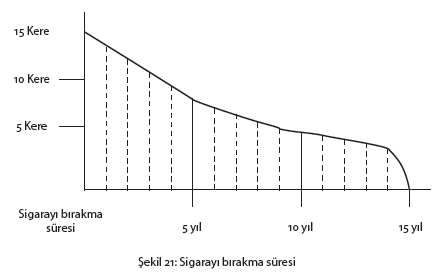
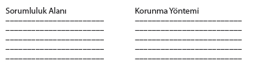
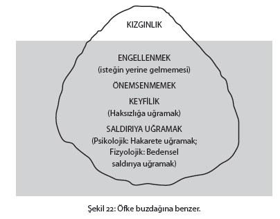

(100 CC değerleri)
|
Alkollü içkiler |
Kalori |
Alkol % |
Alkolsüz içkiler |
Kalori |
Alkol % |
|
Bira (tekel) Cin Rakı Şarap Viski Votka Likörler Ahududu Nane Portakal Muz |
42 231 335 85 263 275 274 356 400 315 |
4 33 48 11 38 40 25 30 40 25 |
Çay Ihlamur Kahve (toz) Kolalı gazoz Maden suyu |
- - - 39 31 |
- - - (1 şişe 117 kal.) - |
İçkilerin kullanılan ölçüleri esas olarak yapılan değerlendirmede, bir bardak viskinin (30 gr) yaklaşık 75-86 kalori, bir kadeh konyak ve cinin 85-90 kalori, bir küçük şişe şarabın (35 cl) yaklaşık 500 kalori, likör ve hafif içeceklerin bir kadehinin (20 gr) 50-80 kalori, küçük biranın 80 kalori olduğu hesaplanabilir.
Bir gram saf alkolün 7 kalori olduğu unutulmamalıdır.
Kilo alma problemi olan bir insan için yediğine dikkat etmek önemli bir stres kaynağıdır. Eğer bir de yapılan fedakârlık istenilen sonucu vermiyorsa, yaşanılan sıkıntı daha da artar.
Beslenme konusunda yeterince aydınlanmamış birçok kişinin problemi yemek aralarında aldıkları kalorileri hesaplamamaktır.
Örneğin sofrada yediklerini yarıya indirdiği halde, kilo veremeyen hatta bazen tam tersine kilo alan birçok insan vardır. Bize, ne yapsa kilo veremediğini söyleyen hastalarımızdan birini yakından izlediğimizde, bir yaz gününde yemek dışında aldığı kalorilerin şunlar olduğunu gördük:
Gün boyu
10 bardak çay bir şekerle 240 kalori
4 Kola 470 kalori
1 torba cips (50 gr) 280 kalori
2 dondurma 380 kalori
1/2 paket peynirli kraker 240 kalori
İkram edilen 1 çikolata, 1-2 akide şekeri, bir avuç kabak çekirdeği hesaba katılmadan, bu kişinin yemek dışında aldığı kalori miktarının 1610 olduğu görülmektedir. Bu miktar oturarak çalışan bir insanın ihtiyaç duyduğu kalori miktarından sadece 400-900 daha eksiktir.
Bu durumda da söz konusu kişinin yemek için sofrada yaptığı fedakârlığın hiçbir anlamının olmayacağı açıktır.
İşte besinlerin kalori değerleri konusunda aydınlanmak, insanı bu tür hatalardan korumaktadır.
Bütün yazılanları ve bu alanda yapılan araştırmaları özetlemek gerekirse, kilo vermek isteyenlerin şu gerçekleri göz önünde bulundurmaları gerekir.
• Aç kalarak kilo verilmez (Diyet terk edilir ve alınan kilolar kısa sürede geri alınır).
• Fizik egzersiz yapmadan diyet yapmak anlamsızdır ve sonuç verme şansı “sıfır”dır.
• Davranış değişikliği yapmadan ve yeme davranışını değiştirmeden verilen kiloları korumak mümkün değildir.
• Diyet programından sonuç alabilmek için haftada 1/2 kg vermek ve bunu sürdürmek hedeflenmelidir. Bu da ancak “davranış düzenlemesi” ile mümkündür.
Bedenimizdeki her tür doku, hücrelerimizin yakıtı ve hormonlarımız, yediklerimizle beslenmektedir. Geçtiğimiz 15 yıl içinde, üstün nitelikli sporculardan beklenen performans ve halk sağlığı açısından, beyin ile beden arasındaki ilişkiye yoğun bir ilgi gösterilmiş ve bu konuda büyük bir bilimsel literatür oluşmuştur. Şimdi cevaplandırılmaya çalışılan temel soru, “Beynin işlevlerini yerine getirmesinde besinlerin oynadığı rol nedir?” sorusudur.
Metabolizma açısından bakıldığında beyin son derece aktif bir organdır, devamlı olarak “aç”tır ve “yemek seçer”. Sağlıklı beslenmeyle konsantrasyon yeteneği, tepki verme hızı, hafıza ve zihinsel akıcılık arasında bir bağ vardır. Bu bağı inceleyen bilimsel yan dal “Nutritional Neuroscience”dır.
Nutritional Neuroscience, bir bilimsel disiplin olarak henüz çok genç olmakla beraber birçok önemli sorunun cevabı ve önemli bulgular, bu alanda sürdürülen çalışmalara bağlıdır.
Aşağıda Psychology Today dergisinden derlenmiş olarak bu alanda yapılan çalışmaların önemli bazı bulguları sıralanmıştır.
• Beyin sağlığı sadece alınan yağın miktarına değil, cinsine de bağlıdır. Entelektüel performans için, özellikle balıklardan alınan yağa ihtiyaç vardır. Önemli bir nokta, alınan yağ miktarını azaltan ancak, bunun ne türden bir yağ olduğunu dikkate almayan diyetlerin zihinsel performansı tehdit ettiğidir.
• Karbonhidratlar, özellikle beraberinde protein ve yağ olmaksızın alındığında, zihin yatıştırıcı bir görevi üstlenmektedir.
• Duygusal ve zihinsel performans B vitamininden etkilenmektedir.
Son 10 yılda bilim adamları tek bir risk faktörünü ortadan kaldırmak yerine “çoklu risk faktörlerini” kontrol altına almaya çalışmışlardır. Bu çalışmalar sırasında kolesterol seviyesiyle insan psikolojisi arasındaki ilişki dikkat çekmiştir. Bu alanda çalışan bazı bilim adamlarına göre kalp sağlığı için önerilen düşük kolesterol; cinayet, intihar, kaza ve saldırgan davranış riskini artırmaktadır. Cincinnati Jewish Hospital Kolesterol Merkezi yöneticisi Charles Glueck depresyon sebebinin yetersiz beslenmeden olmadığını, tam tersine depresyondaki hastaların yemekle ilgilenmedikleri için yetersiz beslendiklerini savunmaktadır. Dr. Glueck yapılan araştırmalar sonucunda yüksek kolesterol seviyesiyle (özellikle de trigleserit diye bilinen doymuş kan kağı yoğunluğuyla), yetişkin ve çocuklarda rastlanan manik depresif ataklar ve şizofreni arasında dikkat çekici bir ilişki olduğunu belirtmektedir. Buradan çıkan sonuç yüksek kolesterolün sadece kalp için değil, beyin için de zararlı olduğunu düşündürmektedir.
Alınan besinlerdeki yağın çoğu trigleseritlerden oluşmakta ve insan bedeninde yağ asitlerine dönüşmektedir. Dr. Glueck’e göre, depresyona eğilimli kişilerde trigleserit oranı düşürüldüğünde, depresyon artmaktadır.
Kandaki Yağ ve Depresyon Arasındaki Bağlantı
Yüksek trigliserit oranı kanın yoğunluğunu artırıp akışkanlığını azaltmaktadır. Böylece beyin hücreleri ihtiyaç duydukları oksijeni kan aracılığı ile almakta zorluk çekmektedirler. Böyle bir oluşumun doğurduğu iki sonuç vardır: Birincisi beyinde minik hasarlanmalar olur. İkincisi de kanın pıhtılaşma riski artar. Beyindeki minik hasarlanmalar unutkanlığa, kan pıhtılaşma riskinin artması ise, inmelere ve kroner kalp hastalıklarına yol açar. Ayrıca yapılan araştırmalar organik kökenli depresyon ve saldırganlık belirtilerinin de bu oluşumunun sonuçları olduğunu ortaya koymaktadır. Trigliserit seviyesinin düşürülmesi, kan sıvısındaki yoğunluğu azaltarak, beyne yeterli miktarda oksijen gitmesini sağlar.
Beynin Enerji Kaynağı: Glikoz
Hormonlar hafızanın desteklenmesini glikoz seviyesini yükselterek yapmaktadırlar. Virginia Üniversitesi profesörlerinden Paul Gold’un fareler ve insanlar üzerinde yaptığı araştırmalara göre, glikoz, aç veya tok karnına, yiyeceklerle ya da beyne doğrudan enjeksiyon yoluyla alınmasından sonra kalıcı bir hafıza oluşumunda belirleyici rol oynamaktadır. Tatlı veya şeker yiyerek daha akıllı bir insan olmamız mümkün değildir. Beynin ihtiyaç duyduğu glikoz, çeşitli besinlerden ve meyvelerden doğal yolla karşılanır.
Normalde beynin ihtiyaç duyduğu glikoz dozu birkaç faktöre bağlıdır. Bunlardan bazıları:
• Kişinin o anki kan şekeri seviyesi
• Fiziksel ve zihinsel stres oluşturucu etkenler
• Beslenme alışkanlıkları
İnsanların en çok zihnini kurcalayan sorulardan biri, önemli bir sınava girmeden önce şekerli bir şey yemek veya içmenin yararlı olup olmadığıdır. Bu “evet”, “hayır” olarak cevap verilemeyecek kadar karmaşık bir konudur. Her şeyden önce alınması gereken glikoz miktarı konusunda henüz kesin bir sonuç yoktur. Bundan başka alınan doz yalnızca ihtiyaç karşılamayla ilgili değildir. Glikoz’un fazla alınması, hipoglisemik tepkiye yol açar. Bunun sonucu olarak kan şekeri önce yükselir, sonra da bu yükselmeye tepki olarak düşer. Ortaya çıkan ani şeker şokuna karşılık, kana insülin hücum eder ve fazla miktarı ortadan kaldırır. Bu da sınavdan alınmak istenen yüksek performansı düşürür.
Prof. Paul Gold’a göre, dengeli bir beslenmedeki karbonhidratlı yiyecekler, beynin enerji ihtiyacını karşılamaya yeter. Bir başka ifade ile söylemek gerekirse beyin kendisi ile ilgili düzenlemeleri yapma becerisine sahiptir.
Karbonhidratlar Kaygıyı Azaltıyor
Massachusetts Institute of Technology araştırmacılarından Judith Wurthman’a göre karbonhidrat açısından zengin bir beslenme, triptofan adlı aminoasidin beyinde bol miktarda salgılanmasını sağlayarak, kaygıdan kurtulmaya ve ruhsal gevşemeye yardımcı olmaktadır.
Wurthman, âdet öncesi gerginlik çeken kadınların, regl döneminden iki hafta önce aldıkları karbonhidrat miktarını artırdıklarını söylemektedir. Wurthman’a göre bu durum insanın kendi kendini iyileştirme çabasının en iyi örneklerinden biridir. Bunun sebebi, beyindeki serotonin miktarını artırarak, depresyon, kaygı ve konsantrasyon bozukluklarını ortadan kaldırmaktır.
Benzer şekilde kış aylarında yorgunluk ve depresyondan şikâyet edenler de farkında olmadan aldıkları karbonhidrat miktarını artırmaktadırlar.
Besinler ile Duygu Arasındaki İlişki
• Acılı ve baharatlı yiyecekler endorfin salgılanmasını hızlandırır. Endorfin insan bedeninin doğal morfini ve ağrı kesicisidir. Acılı ve baharatlı beslenmenin altında belki de insanların kendi morfinlerini salgılamaktan duydukları haz yatmaktadır.
• Halk arasında “Tatlı yiyelim, tatlı konuşalım” diye bir söz vardır. Çikolata gerçekten insanların kendilerini daha iyi hissetmelerine sebep olmaktadır. Çünkü çikolatanın içerdiği “fenilalalin” maddesi beyinde “zihin açıklığı”na yardımcı olan bir “nörotransmitter”e dönüşür. Bu maddenin neşe ve keyif hali üzerinde de etkili olduğuna inanılmaktadır. Ancak bunun nasıl ortaya çıktığı bilinmemektedir. Bir önemli nokta da, kaliteli bir çikolatanın içindeki doymuş yağın (önceden düşünüldüğü ölçüde) kolesterolü artırmadığının anlaşılmış olmasıdır.
Sarmısağın kanın yoğunluğunu azalttığı, akışkanlığını artırdığı, kolestrolü düşürdüğü, enfeksiyonlara karşı etkili olduğu ve hatta kansere karşı koruyucu olabileceği bilinmektedir. Yapılan en son araştırmalar sarmısağın serotonin salgısını artırdığını göstermiştir. Ayrıca farelerle yapılan deneyler, sarmısağın beyin hücrelerindeki yıkımı engellediğini, hafızayı koruduğunu ve hayat süresini uzattığını ortaya koymaktadır.
Mutlu ve Enerjik Olmak İçin Ne Yemeli?
İnsan bedeni büyük bir kimya fabrikası gibidir. Beynin çalışması biyokimyasal maddeler aracılığı ile olur. İnsanın bütün duygu, düşünce ve hareketlerini yöneten, nörotransmitter denilen maddelerdir. Nörotransmitter’lerin en çok bilineni serotonin’dir. Serotonin uykuyu düzenler, kaygıyı azaltır.
Bir diğer nörotransmitter asetilkolin’dir. Asetilkolin’in hafıza açısından önemi büyüktür.
Dopomin ve katelaminler (epinefrin, norepinefrin) uyanıklık, dikkat ve kaygı üzerinde etkilidirler. Hiç şüphesiz insanın yediklerinin beyindeki biyokimyasal düzenleme üzerinde rolü ve önemi vardır. Bugün için sağlıklı, mutlu, enerjik olmak için tam olarak neyin ve hangi miktarda yenmesi gerektiği sorusunun cevabını bulmaktan bir hayli uzaktayız.
Şimdilik sadece dengeli bir beslenme ile insan bedeninin ve beyninin kendi düzenlemesini yapmasına yardımcı olmakla yetinmek zorundayız.
Bu yazı, sigaranın zararları üzerine, sigara içenlerin keyfini kaçırmak amacıyla kaleme alınmamıştır. Ancak yoğun stres altında yaşamanın doğurduğu sonuçlardan biri de sigara tüketimindeki artıştır. Daha fazla sigara içmek ise, zaten yorgun olan beden üzerindeki yükü artırır ve bağışıklık sistemini bastırır. Bunun sonucu olarak da beden, her türlü hastalığı daha kolay kabul edecek bir duruma gelir.
Sigara içen birçok kişi, sigarayı bırakamadıklarını kabul etmek yerine, günlük hayatlarının zorluğundan şikâyet ederler. Oysa insanların büyük çoğunluğunun gerçek problemi sigara içmektir.
Sigara içenler sigaraya, genellikle ergenlik döneminde veya ergenlikten hemen sonra gelen genç yetişkinlik döneminde başlamıştır. Bu yaşlarda “sağlığı kaybetmek” ve “ölüm” hayatın gerçekleri olarak kişiden çok uzaktadır. Ergenler arasında sigara içmek, yetişkinliğin ve yetişkinliğin temsil ettiği bağımsızlığın bir ölçüsüdür. Gruba uymak için arada sırada yakılan sigaralar, genç ergenin utangaçlığını ve sosyal hayata karşı kendine duyduğu güvensizliği maskeler.
Sigarayı arada sırada dudak tiryakisi olarak içmekten, ciddi bir sigara tiryakisi olmaya giden yol, farkına varmadan yavaş yavaş geçilir.
Eğer bir sigara tiryakisiyseniz ve çocuklarınız varsa sigarayı bırakarak onlara iyi bir örnek olabilirsiniz. Çocuklarınızın bulunduğu bir ortamda sigara içiyorsanız, onların sağlığına da ciddi olarak zarar verdiğinizi unutmayın. Anne-babaları sigara içen çocukların, her türlü solunum sistemi ve akciğer hastalığına yakalanma ihtimalinin daha yüksek olduğu, birçok araştırmanın ortak bulgusudur.
Yapılan diğer çalışmalar, gençliğinden itibaren sigara içen her iki kişiden birinin sigaraya bağlı sebepler yüzünden yaşamını kaybedeceğini saptamaktadır. 2030’dan itibaren, tüm dünyada her yıl 10 milyon kişi sigara bağlantılı ölümcül hastalıklara yakalanma riski taşımaktadır. Gelişmekte olan ülkelerde ise ölümlerin %70’i, sigara yüzünden meydana gelecektir.
Hayatın Bir Zevkinden Vazgeçmek
Sigara içenler arasındaki ortak görüş, “hayatta zevk alınan bir şeyden vazgeçmeye gerek olmadığı”dır. Bu görüşe sahip olanlar hayatı uzatmak için sigarayı bırakmanın hayatı güzelleştirmeyip tam tersine daraltacağını savunurlar. Oysa sigarayı bırakmaktaki amaç, esas olarak uzun yaşamak olmayıp, hayattan alınan zevki artırmaktır. Çünkü sigara içen kişi şanslı olup 50-55 yaşlarını aştığı takdirde, hayatının son 10 yılını, yaşadığından zevk almasını engelleyecek sağlık problemleriyle mücadele ederek geçirecek demektir. Bu sebeple esas problem, hayatın süresini uzatmak olmayıp, yaşanılan sürenin kalitesini artırmaktır.
Herhangi bir türde akciğer hastalığı olanların sigara içmesi ise intihar etmekten çok daha kötü bir durumdur. Çünkü bu kişilerin büyük çoğunluğu 50 yaşlarını aştıkları zaman, nefes almaktaki zorlukları sebebiyle ölümü bir kurtuluş gibi görmektedir.
Sigaranın en büyük zararı cinsel hayat üzerinedir. Çünkü sigara damar çeperlerine verdiği zararla ve kolesterolü artırıcı etkisiyle damar tıkanmalarının en başta gelen sebebidir. Bu durum erkekleri kadınlardan biraz daha fazla ilgilendirmektedir.
Nasıl nikotin damar daraltıcı etkisiyle kalp kasına giden damarlarda spazma sebep oluyorsa, bütünü damarlar tarafından beslenen süngersi bir doku olan penise giden kan da aynı biçimde engellenir. Günde bir paket dolayında sigara içen bir erkeğin 50 yaşından sonra cinsel hayatından memnun olduğunu söylemesi için, ya soruyu anlamamış ya da bu işten çoktan vazgeçmiş olması gerekir.

Bilindiği gibi sigara paketlerine yazılacak olan slogan uzun yıllar tartışma konusu olmuştur. Paketlerin üzerine önce “Sigara sağlığınıza zarar verebilir” diye yazılmış, daha sonra bu, “Yasal uyarı: Sağlığa zararlıdır” şeklinde daha kesin bir ifadeye dönüştürülmüştür. Bu uyarı sigara içenleri ne ölçüde etkiliyor bilemiyoruz, ancak bizim önerimiz çok daha gerçekçi ve pratiktir. Sigaraların üzerine yazılması gereken, “Erkeklerde iktidarsızlığa, kadınlarda erken menopoza yol açtığı kanıtlanmıştır!” uyarısıdır.
Sigaranın neden olduğu hastalıklar, sırasıyla, kalp-damar hastalıkları, akciğer kanseri, solunum yolu hastalıkları, kronik nefes sorunları ve sigara bağlantılı çeşitli kanser türleridir (ağız, yemek borusu, gırtlak, serviks/rahim, mesane, böbrek kanseri). Görüldüğü gibi, sigara sebebiyle ortaya çıkan bütün bu hastalıklar, başlıca önlenebilir ölüm nedenleridir.
Sigara İçenlerin Akciğer Kanserinden Ölme İhtimalinin Sigara İçmeyenlerle Kıyaslanması
Sigara içen erkeklerde akciğer kanserinden ölme riski, sigara içmeyenlere göre 22 kez daha fazla; aynı şekilde bronşit ya da amfizem yüzünden ölme riski, 10 kez daha fazladır. Sigara içen kadınların akciğer kanserinden ölme riski, sigara içmeyenlere göre 12 kez daha fazla, bronşit ya da amfizem yüzünden ölme riski ise 10 kez daha fazladır.
Sigarayı bıraktığınız takdirde, sigaraya bağlı bir sebeple ölme ihtimaliniz kendiliğinden azalmaktadır. Bu süre ne kadar uzarsa, yaşama şansınız o kadar artmakta ve 15 yıl sonra hiç sigara içmemiş kişilerle aynı düzeye gelmektedir. Ne kadar sigara içmiş olduğunuz çok az fark yarattığından, sigarayı bırakmak her zaman için anlam taşımaktadır. Şekil 21, ortalama ölçülerde sigara içen birinin sigara içmeyen birine kıyasla akciğer kanserinden ölme ihtimalini göstermektedir.
Ne kadar süre sigara içmiş olursanız olun, sigarayı bıraktığınız zaman, sigaraya bağlı bütün hastalıklara yakalanma riskiniz de azalmaktadır. Örneğin, sigara, kalp krizinden hayatı kaybetme riskini 3 kat artırmakta, ancak sigaranın bırakılmasıyla bu risk hızla azalmaktadır. 5 yıl sonunda sigaraya bağlı bir erken ölüm ihtimali yarı yarıya azalmakta, 15 yıl sonra ise tüm riskler önemli ölçüde ortadan kalmaktadır.
Sigara Fizyolojik Bağımlılık Yaratır
Sigara içenlerle ilgili araştırmalar, sigara içen her 5 kişiden 4’ünün sigarayı bırakmak istediğini, ancak buna teşebbüs edenlerden ancak dörtte birinin bunu başarabildiğini ortaya koymaktadır. Sigarayı bırakamayanlar ise gerçekte, sigarayı bırakırken yaşanan kesilme belirtileri ve bunların verdiği rahatsızlıkla başedemeyenlerdir.
Sigara, eskiden düşünüldüğü gibi psikolojik bağımlılık yaratan bir madde değildir. Sigara içmek psikolojik bağımlılık olmakla beraber, sigara kuvvetli fizyolojik bağımlılık yaratan maddeler içermektedir. Bu sebeple sigarayı bırakırken, alkol, eroin alışkanlıklarında olduğu gibi (ancak daha farklı ve hafif) kesilme belirtileri yaşanması kaçınılmazdır.
Eğer sigarayı bırakmak için bir teşebbüste bulunmak istiyorsanız, aşağıdaki program size yardımcı olacaktır.
Sigaradan Vazgeçmek
Kişinin kendi isteği olmadıkça, sigaranın hatır için bırakılamayacağı unutulmamalıdır. Bir başka ifadeyle, “Sigarayı kendi isteğinizle bırakmak istiyor musunuz ve bu konuda çok kuvvetli bir istek duyuyor musunuz?” sorusuna, tereddütsüz, “EVET” cevabının verilmesi gerekir.
Birinci adım: Sigara içme alışkanlığınızı analiz edin. Bir tam gün boyunca yaktığınız her sigarayı ve hangi durumlarda içtiğinizi kaydedin. En az bir hafta süreyle çektiğiniz her nefesin sebebine dikkat edecek şekilde, sigaraya neden ihtiyaç duyduğunuzu gözlemleyin. Sigara içme alışkanlığınızın üzerinde düşünmeye başlamak, bırakmanızı kolaylaştıracaktır. Bu süreyi iki veya üç haftaya çıkartabilirsiniz.
İkinci adım: Kafanızın içinde bu işten geri dönüş olmadığı kararını kesinleştirin. Sigarayı neden bırakmak istediğiniz konusunda sebepleri bir kâğıda alt alta yazın. Bir başka sayfaya da, bıraktığınız takdirde yaşayacağınız iyi şeyleri yazın. Örneğin yemeğinizin tadını daha iyi alacaksınız, sabahları öksürmeden uyanacaksınız.
Gayretlerinizin karşılığını fazlasıyla alacağınıza kendinizi inandırın.
Üçüncü adım: Sigarayı hangi gün bırakacağınızı saptayın. Bu tarihi takviminize işaretleyin ve o günü hiçbir sebeple ertelemeden, sigarayı kesinlikle bırakın. Eğer bu kararınıza aile içinden veya yakın arkadaşlardan birini dahil edebilirseniz, zor geçecek ilk günler için önemli bir destek sağlamış olursunuz.
Eşlerin sigarayı bırakmaya birlikte karar vermeleri son derece olumlu sonuçlar verir. Çünkü sigara içmeyen birinin, sigara içen biriyle yaşaması son derece zordur. Ayrıca birlikte hareket etmek sosyal sorumluluk yarattığı için kişinin direncini artırır.
Sigarayı bıraktığınızı bütün tanıdıklarınıza söyleyin. Telefonda iş görüşmesi yaparken, konuyla doğrudan ilgilenmeyenleri bile kararınızdan haberdar edin. Böylece zayıf bir anınızda yenik düşme ihtimalinizi azaltırsınız.
Dördüncü adım: Sigarayı bıraktığınız ilk günlerde, sigaranın boşluğunu çiklet veya çekirdek gibi dilediğiniz bir şeyle doldurabilirsiniz. Sigara olmaksızın eliniz size boş geliyorsa, bu boşluğu tükenmez veya kurşunkalemle doldurun (Asla yanmayan bir sigarayla değil). Sigarayı bıraktığınız ilk bir hafta içinde kuvvetli bir iç sıkıntısı ve huzursuzluk duyacaksınız. Bundan, ancak hareket ederek kurtulabilirsiniz. Günlük programınızda yürüyüş için zaman ayırın. Gün içinde bunalırsanız, oda içinde yürüyün.
Günde mutlaka iki defa ılık duş alın. Eğer imkânınız varsa kendinize masaj yaptırın. Sauna da, imkânı olanların kullanabileceği iyi bir araçtır. Bütün bunlar, gevşemenize ve iç sıkıntınızı hafifletmenize yardımcı olacaktır. “Bir sigaradan bir şey çıkmaz,” düşüncesini kafanızda öldürün. Çünkü gerçekte, “Bir sigara bütün gayretinizin ve prestijinizin sıfıra inmesidir”, bunu kendinize kabul ettirin.
İş dönüşü arkadaşlarla barda iki kadeh içmek gibi, sigarayla anlam kazandığına inandığınız ve günlük hayatınızda sigarayla bütünleşmiş faaliyetlere, en az bir hafta (tercihen iki hafta) için ara verin. Çay, kahve ve içkinin sigarayla içilmezse zevk vermeyeceği düşüncesine kapılmayın. İki hafta sonra bunların hepsinden daha fazla zevk alacağınızdan emin olabilirsiniz. Çünkü sigaranın öldürdüğü koku ve tat duyunuz geri gelmeye başlayacak ve siz bunların gerçek lezzetini ve kokusunu yeniden keşfedeceksiniz.
Beşinci adım: Sigara içmemenin tadını çıkartın. Sigaradan tasarruf ettiğiniz parayla kendinize bir hediye alın. Almış olduğunuz birkaç kilonun, sigaradan kurtulmak karşılığında ödenmiş çok küçük bir bedel olduğunu düşünün. Çünkü bu kiloları hızla vereceksiniz. Yemek ve ağzınızı meşgul etmek ihtiyacınızı, düşük kalorili yiyecekler, meyve ve meyve suyuyla karşılamaya çalışın.
Unutmayın ki, sigarayı bırakmak konusundaki en zor dönem birinci haftadır. İç sıkıntısı ve sinirlilik bu süre içinde yoğun olarak hissedilir. Onu izleyen üç hafta içinde sıkıntı, huzursuzluk ve sinirlilik azalır. Sigara isteğinin şiddetini kaybetmesi ise sekiz hafta sürer. Bu süreyi geride bırakan kişi, çektiği sıkıntıyı hiçbir zaman unutmamalı ve ileride kendisinde sigaraya karşı doğacak bir isteği, ödediği bu bedeli hatırlayarak frenlemelidir.
Son bir uyarı da, sigarayı azaltacağına inananlara. Gerçek bir sigara tiryakisi için sigarayı bırakmaktan daha zor bir tek şey vardır, o da “sigarayı azaltmak”. Çünkü sigaranın içindeki maddelerin, insan bedeninde bağlandığı reseptörler (alıcılar), bu maddeleri alamadıkları takdirde sebep oldukları salgılarla iç sıkıntısı ve huzursuzluk yaratmaktadır. Sigara bırakıldıktan bir süre sonra kendilerine bağlanan bu maddeleri unutan reseptörler, arada bir sigara içildiği takdirde bu maddeleri hatırlayarak kişinin sürekli bir iç sıkıntısı yaşamasına, kendisiyle mücadele etmesine ve tabii zayıf olduğu bir sırada da yenilmesine sebep olmaktadır. Bu sebeple sigarayı azaltarak zararlarından korunmaya çalışmak sadece ve sadece kişinin kendisini kandırmasıyla ve içilen sigaranın çok kısa bir süre sonra eski miktarına ulaşmasıyla sonuçlanır.
Makul Olmayan İnançlar
Stres insan hayatına dış ve iç kaynaklardan yansır. İçten kaynaklanan stres, kişinin olayları değerlendirme ve hayata bakış biçiminin sonucudur ve aynı zamanda bu durum stres tepkisinin kronikleşmesine sebep olur.
Aşağıdaki listede birçok kişi tarafından paylaşılan temel bazı varsayımlar yer almaktadır. Bu varsayımların insanın içine saldığı kökler düşünülürse, bunlara inanç demek hiç de yanlış olmaz.
Varsayım 1- Bir yetişkinin ailesi, arkadaşları, çevresi ve tüm tanıyanlar tarafından sevilmesi ve kabul görmesi gerekir.
Birçok insanın peşinde koştuğu bu hayal ne yazık ki mümkün değildir. Çünkü hayatınız boyunca bütün insanları hoşnut etmeniz imkânsızdır. Ayrıca temelde sizden hoşlanan, beğenen ve takdir edenler bile bazı durumlarda olumsuz tavır alabilirler. Bu yönde makul olmayan bir inanç muhtemelen tek başına büyük bir mutsuzluk sebebi olmaya yeter. Oysa çok kere bu inanca sahip olanların büyük çoğunluğu bundan sonraki iki inanca da sıkı sıkıya bağlıdırlar.
Varsayım 2- Üzerinize aldığınız bütün işlerde mutlaka o işi en iyi bilen, kusursuz yapan ve her zaman en mükemmel kişi olmanız gerekir.
Böyle bir inanç, hayatın doğal akışının gereği olan ve bazı durumlarda karşılaşılması kaçınılmaz olan başarısızlıklardan kendinizi suçlamanıza, bundan utanç duymanıza ve kendinize saygınızın azalmasına yol açar.
Çünkü böyle bir şey mümkün değildir. İnsan bazen çok iyi bilmediği işlerle ilgilenmek zorunda kalabileceği gibi, sürekli olarak kusursuzu yaratma çabası kadar insanı yoran ve yıpratan bir şey olamaz.
Herhangi bir şeyi “iyi” yapmak için enerjinizin % 80’ini harcamak gerekiyorsa, “mükemmel” veya “kusursuz” yapmak için bunun iki katını harcamanız gerekmektedir. Böyle bir şey de çok kere mümkün değildir. Birincisi, bu bölümün sonunda daha geniş anlatılacağı gibi, değerlendirmeyi yapacak olanlar isterlerse nasıl olsa bir kusur bulabilirler. İkincisi, böyle bir gayret aşırı derecede anlamsız ve yıpratıcıdır. Hayatında yaptıklarını “mükemmel” yapmış ve bu gerginliklerin sonucu sağlığı bozularak 50 yaşında göçmüş bir kişiye kıyasla, yaptıklarını hep “iyi” yapmış ve 80 yaşına kadar yapmayı sürdürmüş bir kişi daha verimli, başarılı ve yararlı olarak değerlendirilir.
Unutulmamalıdır ki, “iyi”nin düşmanı “mükemmel”dir.
Varsayım 3- İnsanların mutsuzluğuna ve üzülmesine sebep olan dışlarında meydana gelen olaylardır.
Bu inancın akılcı değerlendirmesi insanların mutluluklarını kurmak veya üzüntüden uzak durabilmek için dış olayları kontrol etmelerinin gerektiğidir. Bu kontroller sınırlı olduğu ve diğer insanların niyet ve arzularını bütünü ile yönlendirmek mümkün olamayacağına göre, sonuç yetersizlik duygusu ve sürekli kaygı (kronik anksiyete) olacaktır. Mutsuzluğu olaylara yüklemek, gerçeklerden kaçma yoludur. Mutsuzluğun sebebi olayı yorumlayan kişisel ifadelerdir. Diğer insanları ancak sınırlı bir ölçüde kontrol edebileceğinize göre, esas kontrolü kendi duygularınız üzerinde yapmanız gerekir. Bundan sonraki bölüm doğrudan doğruya bu konudaki akıl yürütme biçimini yeniden düzenlemeye yöneliktir.
Varsayım 4- İnsanların ve “diğer şeylerin” olmasını istediğiniz gibi olmaması dehşet vericidir.
Bu bir “şımarık çocuk” belirtisi olarak tanımlanabilir. Yorgunluklar, sıkıntılar düzlüğe erdikten sonra kendi kendine konuşma başlar. “Bu benim başıma niye geldi?”, “Allah kahretsin böyle olmamalıydı”, “Bu çok kötü”, “Bütün belalar beni bulur”. İşlerin akışını değiştiren her uygunsuzluk, problem veya başarısızlık, kendinizle ilgili bu tür bir kötülük şeklinde değerlendirilir. Sonuç ise gerçekçi olmayan yoğun bir strestir.
Varsayım 5- Geçmişte geleceği belirleyen pek çok şey vardır.
Evet hiç şüphesiz geçmişteki bazı şeyler geleceği belirler. Ancak çok şükür bu “bütün gelecek geçmiş tarafından belirlenir” anlamına gelmez. Aksi takdirde hayat çok sıkıcı ve çekilmez olurdu. Hayatın özelliği ve yaşamanın güzelliği insanı belirleyen sürprizlerdir.
Geçmişte meydana gelmiş herhangi kötü bir olay hiçbir şekilde bunun gelecekte de tekrarlanacağı anlamına gelmez.
Sizin bir şeyden fazla etkilenmiş olmanız buna mutlaka devam etmek zorunda olmanız demek değildir. Bu durumla başaçıkmayı başarabilirsiniz. Olaylar karşısında vermiş olduğunuz tepkiler, pek çok defa tekrarlandığı için hemen hemen otomatikleşmiştir. Bu alışılmış kalıpları gözden geçirip değiştirebilirsiniz. Geçmiş yaşantılarınızda tecrübeler kazanabilirsiniz, ancak bu yaşantıların olumsuz yükü ile yaşamanız gerekmez.
Varsayım 6- İnsanlar çabuk kırılır ve onları hiçbir zaman incitmemek gerekir.
Bu mantıksız inanç önemli duyguların açıkça konuşulmasını engeller ve insanı hayatın zevkli taraflarından fedakârlık etmeye zorlar. İstediğiniz veya ihtiyacınız olan her şey mutlaka bir ölçüde bir başkasını rahatsız edebileceği için kendinizi engellenmiş ve mutsuz hissedersiniz.
Bu konuda tereddütleriniz varsa “Güvenlilik Eğitimi” bölümü size ışık tutacaktır. Bazı durumlarda susmak, içe atmak, kısa vadedeki çatışmaları önler, ancak ilişkide –uzun vadede ilişkide– çatlaklara, boşluklara, karşılıklı öfke ve olumsuz birikimlere sebep olur.
Varsayım 7- Eğer insanlar sizi onaylamıyorsa, bu mutlaka sizin hatalı veya kötü olduğunuzu gösterir.
Gerek bu inanç, gerekse ikinci ve üçüncü inançlar aynı mantığa dayanmaktadır. Bir insan ya iyidir, ya kötüdür. Bu aynı zamanda bütün Türk filmlerinin de mantığıdır. Filmin “iyi”si hep iyilik yapar, hiç kötülük yapmaz; filmin “kötüsü”de hep kötülük yapar, hiç iyilik yapmaz. Çocukluğumuzdan başlayarak bu mantıkla yetiştirildiğimiz için, dışarıdan gelecek en küçük eleştiriyi kabullenmek kişiliğimizdeki bütün olumlu nitelik ve özelliklerden vazgeçmek anlamına geleceğinden, kolayca göze alabileceğimiz bir şey değildir.
Oysa dünyada mutlak “iyi” ve mutlak “kötü” yoktur. Derece derece her şeyin iyi ve kötü tarafları vardır. Bazı insanlar bizim bazı yönlerimizi onaylamıyorsa, bu belki onların kendilerine ait sebeplerinden ötürüdür. Belki gerçekten de onaylanacak birçok özelliğimizin yanı sıra, onaylanamayacak bazı özelliklerimiz de vardır. Ve karşımızdaki kişi için o sırada bunlar önem kazanmıştır. Böyle bile olsa meziyet ve niteliklerimizi fark edecek ve bunların hakkını verecek birçok kişi mevcuttur.
İnsan ilişkilerinde onaylanmayan çok kere kişiliğin bütünü değil belirli niteliklerdir. Bu sebeple bütünüyle sakat olan bu inanç, insanlararası birçok ilişkide sürekli kaygıyı doğurur. Bu inancın akıldışı oluşu, özel bir kusurun veya çok iyi olmayan bir niteliğin genelleştirilmesi ve kişiliğin bütününe yönelik bir itham oluşundan ötürüdür.
Varsayım 8- İyi ilişkiler karşılıklı fedakârlığa ve “verme” temeli üzerine kurulur.
Bu inanç “verme”nin “almak”tan daha iyi olduğu esasına dayalıdır. Bu durum herhangi bir şeyi istemek konusunda çekingenlik olarak görülür ve böyle insanlar gizli isteklerinin anlaşılmasını ve karşılanmasını beklerler. Bu tür bir yaklaşımın sonu, ne yazık acı ve buruk istismar edilmişlik, ihmal edilmişlik duygusudur.
Çünkü hayatları fedakârlık ve istenmeyen şeyleri vermeye yönelik insanların hemen hepsi açık veya kapalı bir şekilde verdiklerini karşılarındakilerden geri isterler. Açık veya kapalı dedik, çünkü bazı insanlar yaptıkları fedakârlıkları yerli yersiz dile getirir, bazıları da anlaşılmayı ve ödüllendirilmeyi sessizce bekleyip, içlerinde bol bol küskünlük biriktirirler.
Bir şeyi “vermek” ancak isteniyorsa anlam taşır. İstenmeden verilen bir şeyi alan kişi, çok kere ya aldığının farkında değildir veya aldığı şeyin değerinden haberi yoktur.
Hiç şüphesiz “vermek” güzel bir duygudur. Verilen ister duygu olsun, ister maddi değeri olan bir şey olsun, verenin gücünü gösterir. Ama lütfen unutmayalım, istendiği takdirde, yokluğu hissedildiği ve varlığı alan için anlam taşıyacağı takdirde.
Varsayım 9- Kendini düşünmek kötü ve yanlıştır.
Gerçek olan, sizin istek ve ihtiyaçlarınızı kimsenin sizden daha iyi bilemeyeceği ve hiç kimsenin bunların karşılanması ile sizin kadar ilgili olamayacağıdır. Mutluluğunuzun sorumlusu yine sizsiniz. Kendinizi düşünmeniz, bu sorumluluğa sahip çıkmanız demektir. Bu sorumluluğun size sağlayacağı huzurla çevrenizi düşünmeye, sağlıklı yaklaşımlarda bulunmaya daha çok imkânınız olacaktır.
Bu konuda da tereddütleri olanlar “Güvenlilik Eğitimi” bölümüne bakabilirler. Yanlış olan kendini düşünmemektir. Sağlıklı ilişkiler insanların kendilerini düşündükleri, çıkarlarını açık ve dürüst olarak gözettikleri, alınanların ve verilenlerin hesabının dengeli ve açık olduğu durumlarda kurulur. Yine yanlış olan karşısındakinin hakkını hiçe saymaktır. Bu sebeple kendinizle ilgili duygu, düşünce ve istekleri ortaya koymaktan, ihtiyaçlarınızdan çevrenizi haberdar etmekten çekinmeyin.
Varsayım 10- Kendinizi yalnız hissediyorsunuz ve yaşadıklarınızı ve duygularınızı kontrol edemiyorsunuz.
Bu inanç depresyon ve kaygının temelidir. Gerçek ise, insanlararası ilişkileri ancak belirli bir ölçüde kontrol edebilmemize karşılık, hayattaki her durum veya ilişkiye verdiğimiz tepkiyi yorumlamak konusunda daha büyük bir kontrole sahip olduğumuzdur.
Bu konuda daha ayrıntılı bilgi edinmek için bir sonraki bölüme, “Zihinsel Düzenleme Tekniği”ne bakabilirsiniz.
Varsayım 11- Mutluluk, zevk ve tatmin ancak başka insanların varlığı ile mümkündür ve yalnız olmak berbat bir şeydir.
Hiç şüphesiz başka insanların varlığı insanın dünyasını renklendirir. Arkadaşlarla duygusal alışverişte bulunmak, karşılıklı iletişim yaşanılan hayattan zevk almayı sağlar. Daha da önemlisi çevremizde düşünce ve duygularımızı paylaşacağımız insanların varlığı temel bir ihtiyaçtır. Ancak zevk, tatmin ve hoşnutluk başka insanlarla olduğu kadar tek başına da yaşanır. Zaman zaman tek başına olmak, kendi kendine yetmeyi bilmek bir olgunluk işaretidir.
Bütün bunlardan başka insanın kendisini geliştirmek ve yenilemek için yalnızlığa ihtiyacı vardır. Arkadaşlar ve dostlar nasıl temel bir ihtiyaçsa, insanın kendini ve dünyayı kavraması için zaman zaman yalnızlık ve sükûnet de temel bir ihtiyaçtır. Okumak için, kendisi (yakın veya uzak dünya) üzerine düşünmek için insanın yalnız olması gerekir. Başka insanlarla beraber okuyamayız, bazı temel gerçekleri topluluk içinde kavrayıp “Hah, tamam anladım” diyemeyiz. Bu sebeple yalnızlıktan korkmamak, yalnız kalınca kendimizi terk edilmiş, değersiz biri gibi görmemek ve her zaman, her fırsatta etrafımızda insanların bulunmasını sağlamak için düzenlemeler yapmamak gerekir.
Varsayım 12- Mutluluk koşuşturma içinde olmamak ve bol boş zamana sahip olarak kazanılır.
Bazı insanlar mutluluğu ve yaşamayı ertelemeyi bir alışkanlık haline getirmişlerdir. “Falan iş bitsin, ondan sonra bazı şeylere çekidüzen vereceğim”, “filan iş bir tamamlansın, bak o zaman yaşamak nasıl olurmuş görsünler”. Oysa “Falan-filan”lar; dersten geçer not almak, sınıf geçmek, sınavı başarmak, okulu bitirmek, sevdiğiyle evlenmek, çocuk sahibi olmak, çocukları büyütmek, istenilen işte çalışmak, işte istenilen pozisyonu elde etmek veya işi istenilen şekilde büyütmek, evin borcunu ödemek, çocukların okullarını tamamlaması gibi, hayatın bütününü içine alır.
Mutluluk yaşanılan zamanın içindedir. Dolayısıyla ya vardır, ya yoktur. Mutluluğu her işin tamam olmasıyla, mutlak rahatlıkla karıştırmamak gerekir. Mutluluk, mutlak rahatlıktan daha fazla bir şeydir. İnsan tebessümünü çehresinin bir parçası yapabiliyorsa, yaptığı işten zevk alıyorsa, ailesiyle birlikte olduğu zaman memnuniyeti devam ediyorsa, gelecek günler ona tatlı bir heyecan veriyorsa, kişi mutlu demektir. Mutlu olmak için “cennet”e gitmeyi veya cennet benzeri bir düzeni dünyada sürdürmeyi bekleyenler için ise, mutluluk hiçbir zaman yaşanmayacak bir düş ve boşa geçmiş bir hayat demektir.
Varsayım 13- Kızgınlık mutlaka kötü ve yıkıcıdır.
Kötü ve yıkıcı olan öfke ve kızgınlık değil, bazı durumlarda bu duyguların sonucu kontrol edilemeyen saldırganlıktır. Yoksa insan hayatı boyunca kızmasını gerektiren birçok durumla karşılaşır. Kızgınlık ve öfke konusunda önemli olan iki nokta vardır.
Birincisi, kızgınlığın duruma uygun bir tepki olması, ikincisi kişinin kızgınlığını ifade ederken problemin boyutu ile sınırlı kalması ve asla karşı tarafa yönelik bir şiddetin ortaya çıkmaması. Bu konu geniş olarak “öfke” bölümünde ele alındığı için daha fazla ayrıntıya girilmeyecektir.
Son olarak şunu söyleyebiliriz ki, öfke kişiliğe yönelik bir saldırıya dönüşmez ve başkalarının güvenliğini tehdide yönelmezse, bazen insanın gerçek duygularını ortaya koyan dürüst bir iletişim biçimi olabilir. Bu şekliyle de öfke hem arınma sağlayabilir, hem de karşılıklı duyguların tanınmasına yardım eder.
Varsayım 14- Acı çekmemeniz gerekir. Çünkü sizin hakkınız iyi bir hayattır.
Gerçek olan acının insan hayatının kaçınılmaz bir parçası olduğudur. Batı kaynaklı bir atasözü, “ıstırap çekmeyen olgunlaşamaz” der. Genellikle ıstırap sağlıklı kararlar, gelişim fırsatları ve güç durumlarla birlikte görülür. Acı çekmek hayatı ve insanları tanımak için bir fırsattır. Istırap insanı olgunlaştırır. Acı çekmeden, acı çekenleri anlamak, insanın kendi kararından dolayı ıstırap çekebileceğini anlamak mümkün olamaz.
Hayat dümdüz değildir. Bazen ne yapılırsa yapılsın, istediğimiz bazı şeylerin olmaması veya istediğimiz gibi olmaması ve acı çekmek kaçınılmazdır. Istırap ve engellenmeyi yaşamamış, bu duygu ve durumlarla uygun şekilde başaçıkmayı öğrenememiş insanlar, kaç yaşına gelirlerse gelsinler olgunlaşamazlar.
Varsayım 15- Hayatın küçük zorlukları ve sorumluluklarından kaçmak, onlarla karşı karşıya kalmaktan daha kolaydır.
Sorumluluktan kaçmanın pek çok yolu vardır. “Gelemeyeceğimi söylemem gerek, ama bu gece değil”, “yapmam lazım, ama şimdi değil”, “bugünlük bu kadar yeter…”
Bu konuda bütün uzmanlar tarafından önerilen, ertelemenin ve problemi kafada taşımanın insanı daha çok yorduğudur. Eğer gücünüz yetiyorsa ertelemek yerine “yapın.” Problemi erteleyerek size zevk verecek olan şeyi önce yapmak yerine, önce yapın sonra kendinize ödül olarak size zevk verecek olana yönelin. Göreceksiniz kendinizi hafiflemiş hissedecek ve hoşunuza giden şeyden daha çok zevk alacaksınız.
Önce film seyretmek, sonra musluğu tamir etmek yerine, önce tamir sonra film. Çünkü önce film olursa musluğu ertesi güne ertelemek için birçok sebep çıkacaktır. “Geç oldu, gürültü çıkar” vb.
Eğer bu madde size uyuyorsa, sorumluluktan kurtulmak için kullandığınız standart mazereti buraya yazınız.

Böylece hangi konulardaki sorumlulukların sizi bunalttığını ve bundan kaçış yolunuzu daha açık görmeniz mümkün olabilecektir.
Varsayım 16- Mükemmel bir aşk, mükemmel bir ilişki vardır.
Bu inancı taşıyanlar çoğunlukla her yakın ilişkiden sonra bir hayal kırıklığı yaşarlar. Bu kimseler, hiçbir zaman gerçekleşmeyecek olan, mükemmel bir uyumu bekledikleri için hiçbir şeyden memnun olmazlar.
Bu şekilde düşünenler büyük bir ihtimalle en başta yazılan dört inancı da derece derece taşıyorlardır.
Mutluluk yaşanılana anlam verebilmektir. Bir şeyin tadını çıkartabilmek için onun mutlaka kusursuz olması gerekmez. Kitabın evlilikle ilgili bölümünde, evliliklerde ne tür beraberliklerin, sesli veya sessiz anlaşmaların olabileceği belirtilmişti. Aynı durum evlilikdışı ilişkiler için de geçerlidir. Önemli olan kişinin –kendisini aldatmadan– karşısındaki insanla temel ilkelerde anlaşmış olmasıdır. Çünkü “aşk” sadece ve sadece tanışma ve keşfetme dönemi içinde söz konusu olabilir. Bu dönemden geçip “sevgi”ye ulaşılabilirse, kişiler zoru başarmış demektir. Bu sebeple mutlu olmak için her gün yanınızda olan insanın kıymetini bilin, zihninizde o kişinin kusurlarını, olumsuz yönlerini değil; meziyetlerini, olumlu özelliklerini ve ortak ilişkinize, hayatınıza katkılarını vurgulayın.
Varsayım 17- Hayatta insanın kendisinden daha başka, daha güçlü daha büyük destekler gereklidir.
Bu mazeretin başarısız insanların kalkanı olduğunu hatırınızdan çıkartmayın. Hiç şüphesiz ailelerinden, çevrelerinden aldıkları destekle başarıya ulaşmış insanlar vardır. Ancak başarı için mutlaka böyle bir yardım gerekli değildir. Başkalarının desteği olmadan başarıya ulaşmış insanlar çoğunluktadır. Başarısız insanlar, kendi tezlerini güçlendirmek için bir dizi örnek sıralayabilirler. Fakat başarı potansiyelini içinde barındıran, elde etmek istediği şeyi bilen ve gücünü ona doğru seferber eden kişiye uzun dönemde kimse engel olamaz. Destekle başarıya ulaşmak veya ulaşamamak ancak kısa dönemde söz konusu olabilecek durumlardır.
Büyük bir ihtimalle bu “makul olmayan inançlar” listesine sizin de katacaklarınız vardır. Makul olmayan inançlarınızı tanıyabilmenizin en iyi yolu, kaygı, depresyon, kırgınlık, suçluluk veya değersizlik duygusunu yaşadığınız durumları hatırlamanızdır. Bu duyguların her birinin ardında, özellikle bunlar kronikleşmişlerse, makul olmayan bir değerlendirme ve yorum biçimi vardır.
Sizin ekleyebileceğiniz makul olmayan inançlarınız nelerdir?
DÜŞÜNCELER VE DUYGULAR
İnsan canı sıkıldığı, üzgün olduğu veya hayatında bazı şeyler yolunda gitmediği zaman, bir arkadaşıyla dertlerini paylaşır ve çok kere “dert etme”, “üzme canını”, “sıkma kendini” türünden yaklaşımlarla karşılaşır. İşin ilginç tarafı, ruh sağlığı uzmanlarının bir bölümünden de benzer yaklaşımları duymanın mümkün oluşudur. Bilinmektedir ki, sıkıntısı olan kişi derdini başkasına açmadan önce, zaten birçok defa kendi kendisine benzer türde telkinlerde bulunmuştur.
“Dert etme, canını sıkma, aldırma”cı dostlar ve ruhsağlığı uzmanlarının yanı sıra, bir de Polyannacı dost ve ruhsağlığı uzmanları vardır. Onların yaklaşımını da “beterin beteri var, sen haline şükret” formülü ile özetleyebiliriz. Herkes bilmektedir ki, bu yaklaşımların kimseye faydası yoktur. Ancak bunu söyleyenlerin de söyleyecek başka sözleri yoktur.
Bundan sonraki sayfalarda düşünce ve duyguların ve bunun sonucu ortaya çıkan davranışların sorumlusunun, neden insanın kendisi olduğunu okuyacaksınız. Ancak daha da önemlisi, ilerdeki sayfalarda olaylara yaklaşım biçiminizin gerçekçi bir yaklaşım olup olmadığını sınayacak kriterlere sahip olacaksınız. Bir başka ifadeyle yaklaşımınızı değiştirmek için size ne “dert etme” denecektir, ne de “beterin beteri var”.
Pek çoğumuz, hayatımızdaki diğer insanların ve meydana gelen olayların, duygu ve düşüncelerimizi belirlediğini kabul ederiz. Bu sebeple bizi gerginliğe iten ve duygusal açıdan sıkıntı veren dışımızdaki olay ve kişileri suçlarız. Bunu yaparken de çoğunlukla sadece strese yol açmakla kalmayan, aynı zamanda stresle başaçıkmayı da güçleştiren önemli bir öğeyi gözden kaçırırız. Bu önemli öğe, hayatımızdaki olayları değerlendirme ve yorumlama biçimimizdir. Bu yazıda, “zihinsel düzenleme tekniği” denilen bir yöntem anlatılacaktır. Bu yöntemle, zaman zaman hepimizin kendini kaptırdığı mantıklı ve makul olmayan düşünce biçiminden kaynaklanan gerginlik duygusu ile yapıcı biçimde mücadele etmek mümkündür. Ancak önce düşünceler, duygular ve davranış arasındaki ilişkiyi ele almak aydınlatıcı olacaktır.
A-B-C Modeli
Pek çok kişi, düşüncelerin, duyguların ve davranışın birbirinden ayrı ve bağımsız olduğunu düşünür. Sık sık günlük ilişkilerimizde, “sinirlenmek istemiyorum, ama elimde değil” türünden sözler duyarız. Böyle bir ifade, düşünce ve duyguların birbirinden bağımsız olarak ortaya çıktığını ve doğrudan birbirlerine bağlı olmadığını varsaymaktadır. Ancak gerçek bu varsayımın tam tersidir. Çok ender olarak engel olunamayacak üzüntüler, öfkeler, hayal kırıklıkları olur. Düşünceler, duygular ve davranış arasındaki ilişki Dr. A. Ellis’in geliştirdiği A-B-C modeli üzerinde açıklanabilir.
Bu model üzerinde A noktası, duygu ve davranışa yol açtığı varsayılan olaydır. Örneğin, müdürünüz veya patronunuz, bir işi verilen zamanda tamamlamadığınız için size çıkışmış olabilir. Bu olaydan sonra siz sinirlenmiş ve üzülmüş olabilirsiniz. C noktası sizin, bu olaydan sonraki duygunuzu ve davranışınızı göstermektedir. Örneğin böyle bir eleştiri karşısında savunucu olabilir ve “Bütün hata bende mi?” veya “Bu adam beni ne sanıyor?” türünden bir tepki verebilirsiniz. Ne yazık yaygın bir yanlış inanış olarak, birçok insan A noktasındaki olayın, doğrudan C noktasındaki duygu ve düşünceye yol açtığına inanır.
A Olay (Yöneticinin eleştirisi)
C Duygu ve davranış (üzgün, kızgın, savunucu)
Eleştiricilerden dolayı müdürünüz sizi üzmüştür, değil mi? Oysa A ve C noktası arasında gerçekte çok önemli bir şey daha vardır. A ve C noktaları arasında çoğunlukla atlanan düşünce ve davranışı esas etkileyen, bizim yorum ve yaklaşım biçimimizdir.
A Olay (Müdürün eleştirisi)
B Yorum ve yaklaşım biçiminiz (Bütünüyle unutmuştum, işten atılacağım)
C Duygu ve davranış (üzgün, kızgın, savunucu)
Bu şemada da görüleceği gibi, süreci başlatan müdürünüz olsa bile, duygunuza yol açan sizin kendi düşünce biçiminizdir. Bir olaya yaklaşım ve yorum makul veya makul olmayan biçimde olabilir. Olumsuz ve sıkıntı verecek yorum ve yaklaşım biçimleri alışkanlık haline gelebilir ve insan hayatındaki önemli bir stres kaynağı olabilir. Bir başka yaklaşım biçimi de şöyle olabilirdi.
A Olay (Müdürün eleştirisi)
B Yorum ve yaklaşım biçimi (İşi zamanında bitirmeliydim, ama bitiremedim)
C Duygu ve davranış (Hayal kırıklığı, ancak, “Ben her zaman daha iyisini yapabilirim” yaklaşımının korunması).
Herhangi bir olay çok çeşitli biçimlerde algılanabileceği için, çok farklı duygusal tepkilere yol açabilir. Sizi gerilime sokan olaydaki stres değil, olayı değerlendiriş biçiminizdir. Çoğunlukla stresi yaratan, doğru ve makul olmayan düşünce biçimidir.
Şimdi gerçekten yaşanmış şu olaylara birlikte göz atalım:
İstanbul’un dışında bir büyük şirketin yöneticileri için yürüttüğümüz Stresle Başaçıkma seminerlerinden birinde, grup üyelerinden ikisinin aynı zamanda biri Ankara, biri İstanbul’da olan işyerlerinden telefonla arandığı haberi geldi. Telefona giderlerken Ankara’dan arananın yüzünde merak ve kızgınlık, İstanbul’dan arananın yüzünde merak ve memnuniyet ifadesi sezdik.
Programın Zihinsel Düzenleme Bölümünü yaparken, bu olayı o kişilerden yazmalarını istedik. Ankara’daki işyerinden çağrılan yöneticinin kâğıdında şunlar yazılıydı:
A Olay: İstanbul dışında Stres Semineri sırasında telefonla aranmak.
B Yorum: Allah kahretsin, burada da buldular. İnsana hiçbir yerde rahat vermezler.
C Duygu ve Davranış: Sıkıntılı, kızgın bir ifadeyle yürümek.
İstanbul’dan aranan kişinin kâğıdında ise şunlar yazılıydı:
A Olay: İstanbul dışında Stres Semineri sırasında telefonla aranmak.
B Yorum: Kendi başlarına çözemedikleri önemli bir şey oldu ki, bana ihtiyaç duydular. Bana ihtiyaç duymaları ne iyi.
C Duygu ve Davranış: Keyifli bir ifadeyle yürümek.
Yukarıdaki iki kişinin aynı olaya verdikleri farklı tepkilerde görüldüğü gibi tepkiyi doğuran olayın kendisi değil, kişilerin olaya yükledikleri anlamdır.
Bir Batı Avrupa ülkesinde lüks bir otelde kalan bir Türk, resepsiyonda görevli hanım memurdan, kendisine bir mesaj bırakılıp bırakılmadığını öğrenmeye çalışmaktadır. Ancak resepsiyonist o sırada bir başkasının işiyle meşgul olduğu için –aldığı eğitimin gereği olarak– vatandaşımızı duymamazlıktan gelir. Vatandaşımız bekler, önündeki kişinin işi bittikten sonra, memur bu kez bir başka kişiye dönerek onunla ilgilenmeye başlar.
“Bundan sonra ne oldu?” diye düşünmemize gerek yok. Vatandaşımız bağırmaya ve kendisinin “kim olduğunu göstermeye” çalışır. Yani o öyle kolayca atlanıp, sırası başkasına verilebilecek bir insan değildir. Görevli, “Sinirlenmeyin, efendim” dediğinde de, “Sinirlenmiyorum,” diye daha çok bağırır.
Bu noktada vatandaşımızın yanına gitsek muhtemelen bize şöyle diyecektir:
“Dikkatsiz kız, benim burada durduğumu görmüyor, benden sonra gelenle ilgileniyor. Ben de kızdım tabii.”
Bunu dinlediğimizde de büyük bir ihtimalle vatandaşımıza hak veririz. Görevli dikkatsiz davranmış, karşısındaki de buna kızmıştır. Oysa vatandaşımızı kızdıran ve öfkeyle bağırmasına sebep olan olay, görevlinin sıradan bir dikkatsizliği değil, vatandaşımızın saçının rengi ve dış görünüşü yüzünden kendisinin bir üçüncü dünyalı olarak ilgi görmediği şeklinde yaptığı iç yorumdur.
Bu yaşantıyı şöyle şemalaştırabiliriz.
A Olay: Otel resepsiyonunda görevlinin bir sonraki kişiye hizmet etmesi.
B Yorum: Hak ettiğim davranışı göremiyorum. Görünüşümden ötürü bana değer verilmiyor.
C Duygu ve Davranış: Kızgınlık ve “Ben onlara kim olduğumu gösteririm.”
Birçok kişi bu açıklamalardan sonra düşüncelerin duygulara ve davranışa yol açtığını kabul etmekle beraber, yine de çok az kimse hoş olmayan ve istenmeyen duygulara yol açan gerçek dışı ve olumsuz düşünce sistemini değiştirmenin mümkün olabileceğini kabul etmektedir. Oysa olumsuz duygu ve davranışa yol açan düşünce biçimini “zihinsel düzenleme tekniği” denilen bir yöntemle değiştirmek mümkündür. Bu tekniğin öğrenilmesi gerginliği azaltmak ve nispeten olumlu veya mümkün olmadığı durumlarda nötr, yani tarafsız bir duygu geliştirmek üzere düşüncelerin kontrol altında tutulmasını sağlar.
Türkiye’de gerçekçilik ve kötümserlik aynı anlamda kullanılmaktadır. İyimserlik de Polyannacılık olarak kabul edilmektedir. Oysa kötümserlik kötümserliktir ve gerçekçilikle ilgisi yoktur.
Kötümser insanlar sürekli kötümser yorumlar yaptıkları için, arada isabet kaydeden tahminlerini hatırlatarak haklılıklarını kanıtlamaya çalışırlar. Oysa falcılar da her yılbaşında çok sayıda kehanette bulunmakta ve bunlardan birkaç tanesinde de haklı çıkmaktadırlar.
Yapılan bir araştırma insanların endişelerinin % 90’ının gerçekleşmediğini, gerçekleşenlerin yarısının da korkulduğu kadar kötü olmadığını ortaya koymuştur. Bu sebeple insan kafasını “Kuruntu Üretim Fabrikası” (KÜF) olarak çalıştırmadan önce olayları gerçekçi bir biçimde ele almalıdır.
Akılcı bir analiz
Zihinsel düzenleme tekniğinin birinci basamağı, akılcı olan ve akılcı olmayan düşünce biçimlerini ve yaklaşımlarını birbirinden ayıracak bazı ölçütlerin getirilmesidir. Bu ölçütler problemin akılcı ve gerçekçi bir çözümünün yapılmasını mümkün kılar. Bu sayede olumsuz duygu ve davranışa yol açtığına inandığımız bir olay veya ilişkinin, olumlu ve kişiye gerginlik vermeyen bir biçimde yorumlanması mümkün olur. Akılcı bir analiz için gerekli olan bazı ölçütler şunlardır:
1- Kişinin düşünce biçimi objektif gerçeklere dayanmalıdır. O kişiden başka 3 veya 5 kişilik bir grup insanın da, o olayı aynı biçimde mi algıladığını düşünmek gerekir. Yoksa olay daha farklı yorumlara açık mıdır? Eğer böyleyse kişi olayı ve dolayısı ile olayın yol açtığı tepki ve duygusunu abartıyor demektir.
2- Değerlendirme biçimi, kişiye ve problemi çözmeye yardımcı olmalıdır. Kişinin “mahvoldum, hapı yuttum”, gibi kendisine yönelik yıkıcı düşünceleri çoğunlukla gerçek dışıdır.
3- Yaklaşım biçimi, kişinin diğer insanlarla çatışma ve sürtüşmelerini azaltmalıdır.
4- Değerlendirme biçimi, kişinin kısa ve uzun dönemli amaçlarına katkıda bulunmalıdır.
5- Kişinin yorum biçimi, kendisini duygusal bir çatışma ve gerginliğe sürüklememelidir. Kişinin tavrı, kendisini mutlu, rahat, huzurlu hissetmek yerine üzgün, gergin, öfkeli hissetmesine yol açmamalıdır.
Son zamanlarda sizi kuvvetle rahatsız etmiş bir olayı düşünün. Aşağıdaki boşluğa C’nin karşısına bu duyguyu yazın (gergin, kızgın, sıkkın, çökkün). Bu noktada duygularla karışan bazı düşünceleri iyi teşhis etmek ve ayırmak gerekmektedir. (örneğin, “aptalın biriyim”, “sorumsuzun tekiyim” veya “bana aldıran yok” gibi). Şimdi A’nın karşısına bu duygudan önce meydana gelen olayı yazın. Bunlar başınızdan geçen olayla ilgili, algıladığınız biçimiyle, gerçeklerdir. Bundan sonraki adım, B bölümüne bu durumla ilgili düşünce ve yaklaşımınızı yazmanızdır. Bunu yapmak belki biraz güç olabilir. Çünkü düşüncelerinizi duygularınızdan ayırmanız ve düşüncelerin nasıl duygusal tepkilere yol açtığını tanıyabilmeniz gerekmektedir. İşte bunu öğrenmek bir egzersiz meselesidir.
A Olay
–––––––––––––––––––––––––––––––––––––––––––––––––––
–––––––––––––––––––––––––––––––––––––––––––––––––––
–––––––––––––––––––––––––––––––––––––––––––––––––––
–––––––––––––––––––––––––––––––––––––––––––––––––––
–––––––––––––––––––––––––––––––––––––––––––––––––––
B Düşünce Biçimimiz
–––––––––––––––––––––––––––––––––––––––––––––––––––
–––––––––––––––––––––––––––––––––––––––––––––––––––
–––––––––––––––––––––––––––––––––––––––––––––––––––
–––––––––––––––––––––––––––––––––––––––––––––––––––
–––––––––––––––––––––––––––––––––––––––––––––––––––
C Duygu ve Davranış
–––––––––––––––––––––––––––––––––––––––––––––––––––
–––––––––––––––––––––––––––––––––––––––––––––––––––
–––––––––––––––––––––––––––––––––––––––––––––––––––
–––––––––––––––––––––––––––––––––––––––––––––––––––
–––––––––––––––––––––––––––––––––––––––––––––––––––
Şimdi geriye dönüp olayla ilgili algı biçiminizin geçerlilik derecesini, A bölümünde yazan olay ve olguların geçerliliğini analiz ederek, incelemek gerekmektedir. Bunu aşağıdaki D bölümüne yazın. Burada uygulanacak kural şudur: Gerçek olgu, olayın kamera veya ses kayıt cihazı gibi mekanik bir araçla kaydedilebileceği biçimidir. “Düşüncesiz patronum bana bağırdı” ifadesi, mekanik olarak kaydedilemeyeceği için geçerli değildir. Olayın sadece “Patronum bugün bana bağırdı” bölümü kaydedileceği için D bölümüne geçilebilir. Bu örnek, olayların algılanışındaki yanılgıların bizim başlangıçtaki yaklaşım ve değerlendirme biçimimizi ve dolayısı ile duygusal tepkimizi nasıl etkilediğini görmemize yardımcı olabilir.
(Bu noktada objektifliğin 5 ölçümünü B bölümündeki her düşünceye uygulayın ve bunların makul olup olmadıklarını görün.)
D bölümünde tanımladığımız durumda kendinizi nasıl hissetmek istediğinizi, bu konudaki duygunuzu F bölümüne yazın. Şurasını unutmamak gerekir ki, stres verici bir durumda olumlu bir duygu geliştirilmesini beklemek, gerçek dışı bir tavırdır. Ancak böyle durumlarda sükûnet gibi nötr bir duygusal tepki geliştirilmesi çok daha gerçekçidir.
Şimdi artık E bölümüne, B bölümünde yazılan gerçek dışı düşüncelerinizin yerini alacak akılcı seçeneklerinizi yazabilirsiniz. Bu akılcı seçenekler sizin tarafınızdan kabul edilebilir olmalı ve makul düşünme biçiminin beş ölçütünden en az üç tanesine uymalıdır.
D Objektif olay
–––––––––––––––––––––––––––––––––––––––––––––––––––
–––––––––––––––––––––––––––––––––––––––––––––––––––
–––––––––––––––––––––––––––––––––––––––––––––––––––
–––––––––––––––––––––––––––––––––––––––––––––––––––
–––––––––––––––––––––––––––––––––––––––––––––––––––
E Makul (Akılcı) Düşünce Biçimimiz
–––––––––––––––––––––––––––––––––––––––––––––––––––
–––––––––––––––––––––––––––––––––––––––––––––––––––
–––––––––––––––––––––––––––––––––––––––––––––––––––
–––––––––––––––––––––––––––––––––––––––––––––––––––
–––––––––––––––––––––––––––––––––––––––––––––––––––
F Duygu ve Davranış
–––––––––––––––––––––––––––––––––––––––––––––––––––
–––––––––––––––––––––––––––––––––––––––––––––––––––
–––––––––––––––––––––––––––––––––––––––––––––––––––
–––––––––––––––––––––––––––––––––––––––––––––––––––
–––––––––––––––––––––––––––––––––––––––––––––––––––
Şimdi bu bölümde akılcı bir analiz başlığı altında sıralanan kriterleri bir kere daha ele alın.
1- Düşünce biçiminiz objektif gerçeklere dayanmalıdır
Sizden başka 3 veya 5 kişilik bir grup insanın da, o olayı aynı biçimde mi algılayacağını düşünün. Yoksa olay daha farklı yorumlara da açık olarak kabul edilebilir mi?
Bu noktada mutlaka başka insanların fikirlerine başvurmak ve onların hakemliğini istemek gerekmez. Değerlendirme ve yaklaşım biçimine güvendiğiniz bir veya iki kişinin hakemliğine zihinsel olarak (hayalen) başvurabilirsiniz. Böylece olayı ve dolayısıyla olayın yol açtığı tepki ve duyguyu abartıp abartmadığınız, yaklaşım ve yorum biçiminde isabetli olup olmadığınız konusunda fikir sahibi olabilirsiniz.
2- Değerlendirme ve yaklaşım biçiminiz size ve problemi çözmeye yardımcı olmalıdır
İnsanın “mahvoldum”, “hapı yuttum” gibi kendisine yönelik yıkıcı düşünceleri büyük çoğunlukla hem gerçek dışıdır, hem de yararsızdır. Bir konuyu ele alış, düşünüş ve yaklaşım biçiminizin problemi çözmeye yararı yoksa, o düşünce biçimi geçerli değildir. Bu yaklaşımın içine çeşitli konulardaki endişelerinizi de dahil edebilirsiniz. Düşünce biçiminin problemin çözümüne katkısı olması gerekir. Örneğin, ertesi gün pikniğe gidilecekse, havanın güzel olmasını isteyebilirsiniz, ancak, “Acaba hava güzel olacak mı? Olmazsa mahvolduk, günümüz berbat olur,” diye düşünmenin, endişelenmenin ve üzülmenin problemin çözümüne bir katkısı yoktur. Bu sebeple de böyle bir düşünce biçimi gerçekçi ve geçerli bir yaklaşım biçimi değildir.
3- Yaklaşım biçiminiz diğer insanlarla çatışma ve sürtüşmelerinizi azaltmalıdır
Eğer konulara yaklaşım biçiminiz sürekli olarak başka insanlarla aranızda problem çıkmasına ve gerginlik doğmasına sebep oluyorsa, haklı olduğunuzu düşünüyor bile olsanız, yaklaşım biçiminizi gözden geçirmenizde yarar vardır. Bu konuda “Güvenlilik Eğitimi” bölümündeki ilkeler çatışmanın kaynakları konusunda size ışık tutacak ve çözüm yolları konusunda da fikir verecektir.
Sağlıklı bir yaklaşım biçiminin insan ilişkilerinde çatışma çıkartmayan, gerginlik tohumları serpmeyen bir yaklaşım biçimi olması gerekir.
4- Değerlendirme biçiminiz, kısa ve uzun dönemli amaçlarınıza katkıda bulunmalıdır
Bu kriteri çok kişi “fırsatçılık”la karıştırır. Oysa burada sizden istenen fırsatçı olmanız değildir. Bazı insanlar bir tartışmayı kazanmak için veya sadece bir tartışmanın bir anında galip duruma geçmek için, uzun dönemde kendilerine karşı kullanılabilecek olan sözleri söylemekten kendilerini alıkoyamazlar.
Bir konuya yaklaşırken –“zaman düzenlemesi” bölümünde anlatıldığı gibi– kısa ve uzun dönemdeki amaçlarınız çok iyi aklınızda olmalıdır. Böylece sadece o anın itmesiyle hareket etmekten kurtulur, davranışlarınızı kısa ve uzun vadeli plan ve amaçlarınız doğrultusunda yönlendirebilirsiniz.
5- Yorum biçiminizin sizi duygusal bir çatışma ve gerginliğe sürüklememesi gerekir
Tavrınız kendinizi mutlu, rahat, huzurlu hissetmenizi sağlamalıdır. Eğer yaklaşım ve yorum biçiminiz kendinizi üzgün, gergin, öfkeli hissetmenize sebep oluyorsa, bu yorum biçiminizi bir kere daha gözden geçirmekte yarar vardır.
Yukarıda sıralanan maddelerin konu başlıklarını bir kere daha tekrarlayalım. Böylece isterseniz bunları bir küçük kâğıda yazıp, cep defterinizin arasına veya ceketinizin üst cebine koymanız mümkün olabilir. Bu şekilde, bu yaklaşım biçiminin kriterlerini ezberlemeniz ve kendinize mal etmeniz zor olmayacaktır.
Bu yaklaşım biçimim;
1- Başkaları tarafından da paylaşılır mı?
2- Problemi çözmeye faydası var mı?
3- İnsan ilişkilerimi olumlu etkiler mi?
4- Kısa ve uzun dönemli amaçlarıma katkısı var mı?
5- Çatışma ve gerginliği azaltır mı? (İç huzurumu korumaya yardımcı olur mu?)
Hiç şüphesiz bazı durumları bu beş ölçüte uydurmak zordur. Örneğin, bir eşyanın zarar görmesi ve arabanın bozulması gibi insan ilişkilerini etkilemeyen problem kaynakları olabilir. Ancak günlük hayat içindeki birçok durumu yukarıdaki ölçütlerle değerlendirmeniz ve yaklaşımınızı sınamanız mümkün olacaktır.
Böyle bir değerlendirme yaptığınız zaman eğer yukarıda sıralanan 5 maddeden 3 tanesine evet demiyorsanız, yaklaşım biçiminizi gözden geçirmeniz gerekmektedir. Büyük bir ihtimalle yaklaşım biçiminizde gerçekçi olmayan bazı özellikler var demektir. Böylece kendi yaklaşım biçiminizin gerçekçiliği konusunda karar vermeniz mümkün olur. Bu şekilde neyin gerçekten “dert etmeye değer”, neyin “değmez” olduğuna ve “daha beter” bir durumun olmasının size yararı olup olmadığına kendiniz karar verebilirsiniz.
A Tipi Davranış Biçiminin Değiştirilmesi
Bu bölümde A tipi davranış biçimi ile koroner kalp hastalığı arasındaki ilişkiye kısaca da olsa hiç değinilmeyecektir. Çünkü bu ilişki, kitabın en uzun bölümlerinden biri olarak bütün yönleri ve ayrıntılarıyla anlatılmıştır. Ancak A tipi davranış biçimini aşmanın önemi ve gereğini vurgulamak için, bu davranış biçiminin –açık seçik ortaya konduğu gibi– kalple olan ilişkisinin yanı sıra genel sağlık üzerine de çok olumsuz etkileri olduğunu hatırlatalım. Çünkü A tipi davranış biçiminin bazı özellikleri genel sağlığa hem doğrudan hem de dolaylı olarak zarar vermektedir.
Örneğin sürekli rekabet ve sabırsızlık, sigara içme eğilimini artırdığı için, düşmanca duygular gerginliğe sebep oldukları için, genel sağlığı kaçınılmaz olarak olumsuz yönde etkiler.
A tipi davranış biçiminin özellikleri
A tipi davranış biçiminin birinci derecedeki özellikleri, ümitsizce zamana karşı koyma duygusu ve kolayca uyandırılabilen düşmanlık duygusudur. Sürekli olarak en kısa zamanda en fazlasını başarma tutkunu olan A tipi davranış içindeki bir insan diğer insanlara karşı da şiddetli huzursuzluk, öfke ve sabırsızlık gösterir.
İkinci derecedeki belirgin özellikleri aşırı titizlik (obsesiflik), yarışmacılık, diğer insanları ve çevreyi kontrol etme isteğidir. İkinci derecedeki saklı özellikleri ise duygusal tükenme, kendine zarar verme eğilimi, tehlike ve riske girmedir.
A tipi davranışında bir insanı seyrederseniz, yüzü genellikle gergin ve düşmancadır. Gözlerini hızla kırpabilir, dizlerini sallayabilir. Parmaklarını tıkırdatıyor veya başparmağını birbirinin çevresinde dolaştırıyor olabilir. Bazen sürekli bir hareket içindedir. Çoğu kez dudaklarını ısırır, kafasını sallar veya konuşurken içini çeker. Genellikle acele eder veya başka insanların sözünü keser. Konuşması kesin ifadelerle doludur. “Hiçbir zaman…, daima…, mutlaka…”
Duruşu gergindir, sözlerini jestlerle canlandırır. Bu jestler konuşmaya çeşni veren normal özellikler olmayıp, sözlerin kuvvetini artırmak için kullanılır ve zaman zaman konuşmanın önüne geçer. Çoğu kere gürültülü bir şekilde güler. Ancak unutulmaması gereken, her A tipi davranan insanın bütün bu davranış karakter isteklerini ve hareket özelliklerini göstermesi gerekmediğidir.
A tipi davranış biçimi içindeki insanların birçoğu ne kendilerinin, ne de başkalarının duygularıyla temas halindedir. Bir şeyler yapmak için o kadar “kan ter” içindedirler ki, durmaya, düşünmeye ve bu tür “şey”lere vakit ayıramazlar.
A tipi davranan insanlar hızlı yürür, hızlı yer, yemekten sonra oyalanmaktan, eşler veya arkadaşlarla alışverişten hoşlanmazlar. Birçoğu dakikliği bir fetiş haline getirmiştir.
Tipik bir A, zamanla, diğer insanlarla ve kendisiyle savaşır. Çoğunlukla tanıdıkları birkaç B’yi veya A tipi davranmayanları küçümserler.
A tipi davranış biçimi içinde olan insanların en büyük yanılgısı, başarılarını bu davranış biçimiyle özdeş tutmalarıdır. Daha açık söylersek, A tipi davranış biçimine sahip insanlar, bu davranış biçimine sahip olmasalar, asla başarılı olamayacaklarını düşünürler.
Hiç şüphesiz endüstrileşme ve Batı biçimi hayat A tipi davranış biçiminin özelliklerini ödüllendirmekte ve pekiştirmektedir.
Zor olan
Şurası muhakkak ki, dünyadaki en zor işlerden biri yüzde yüz A tipi davranış biçimi sahibi bir insanı, değişmeye ikna etmektir. Çünkü sağlığıyla ilgili hiçbir şikâyeti olmayan, kendini ölüme götüren özelliklerini “meziyet” zanneden ve başarısının sebebini –ilerde anlatılacağı gibi, yanlış olarak– bu özelliklerine atfeden, ruhsağlığı ile ilgili bir yardım almayı “aşağılanmak” olarak yorumlayan insanları değişime zorlamak psikoterapinin kurallarıyla da çelişmektedir.
Ancak neyse ki, yüzde yüz A tipi davranış biçimi içinde olanların sayısı çok fazla değildir. Bu sebeple davranışında A tipi davranış biçiminin birçok özelliğini taşıyan kişiler, bu özellikler ve sonuçlarıyla ilgili olarak uygun biçimde aydınlatılabilirse değişim yolunda bir istek doğmaktadır (daha önce de belirttiğimiz gibi “istek”, değişimin ve psikoterapinin ilk şartıdır).
“Bana bir şey olmaz”
A tipi davranış biçimi içindeki insanları yönlendirmenin önemli güçlüklerinden birisi de, bu kimselerin risk almayı sevmelerinden kaynaklanır. “Evet, çok çalışmak, zaman zaman bunalmak ve çok sigara içmek sağlığı tehdit eder, kalbe zararlıdır, akciğerlere zararlıdır, tamam ama her sigara içen, her çok çalışan, bunalan da kalp hastası veya akciğer kanseri olmuyor ya…” diye düşünürler. Hatta birçoğu “benim tanıdığım biri var, adam hem günde 3 paket sigara içer, hem de…” diye lafını sürdürmeye bayılır. Kısacası özel örnekleri genelleyip, “her nasılsa” kendilerini bekleyen “sonuç”tan kurtulacaklarına inanırlar. A tipi davranış biçimine sahip kişilerin felaketlerini hazırlayan (problemlerine sebep olan) davranışlarını değiştirmek konusunda karşılaşılan güçlüklerden biri de, bazı hekimlerin tutum ve tavırları ve buna bağlı olarak ortaya çıkan durumlardır. Bu güçlüğün birçok sebebi vardır.
Birincisi, birçok hekimin, davranış biçimleri ile tamamen organik sonuçlarla ortaya çıkan hastalıklar arasındaki ilişkiler konusunda bilgileri yeterli değildir. Bunun uzantısı olarak “yok efendim olmaz öyle şey…”, “abartılmış sözler bunlar…”, “bu konuda doğrulanmamış birtakım iddialar var, ama…” gibi yaklaşımlarda bulunurlar.
İkincisi, hekimlerin azımsanmayacak bir çoğunluğu A tipi davranış biçimine sahip oldukları için, bunun böylesine doğrudan hastalık ajanı olabileceğini kabullenmekte direnç gösterirler. Birçoğu kendi karakterlerinin bu ayna hayalini tedavi etmek istemez. Çünkü hekimin kendisinin de A tipi davranışı hastalık olarak kabul etmesi için, normal olduğunu düşündüğü birçok davranışın patolojik olduğunu itiraf etmesi gerekir.
Üçüncüsü, bu konudaki bilgileri edinip doğruluğunu kabullenseler bile, hastalarını bir psikolog veya psikiyatra göndermeye bazen gönülleri, bazen kafaları razı olmaz. Hasta için ölümcül sonuçlar doğurabilecek bu durumu, “biraz sakin olun…, hayatınızı yavaşlatın…, işlere biraz ara verin…, (son zamanlarda) streslerden uzak durun” gibi hiç kimseye hiçbir fayda sağlamadığı açık olan önerilerle halletmek isterler.
Dördüncüsü, daha önce de belirttiğimiz gibi hekim, ruhsağlığı uzmanlarından yardım istemek önerisinde bulunsa bile, A tipi davranış biçimini benimsemiş olanlar böyle bir öneriyi reddedebilir.
Beşincisi, ruhsağlığı uzmanlarının önemli bir bölümü A tipi davranış biçimini değiştirmek konusunda hazırlıklı ve donanımlı değillerdir.
Şurası muhakkak ki, A tipi davranış biçimine sahip ve başarılı birçok insan vardır. Ancak dünya başarısız A tipi davranış biçimli insanlarla da doludur.
Hiçbir zaman akıldan çıkarmamak gerekir ki, A tipi davranış biçimi, bir işadamı, yönetici veya başarılı insana özgü davranış biçimi değildir. A tipi davranış biçimine ev kadınları arasında olduğu gibi, şoförler, bakkallar, postacılar ve temizlik işçileri arasında da rastlamak mümkündür. Buna karşılık A tipi davranış biçimine sahip olmadığı halde –isterseniz buna genel olarak dendiği gibi B tipi davranış biçimi diyelim– başarılı olan birçok insan vardır. Ancak A tipi davranış biçimi içindeki başarılı insanlar, başarılarının sebebinin bu davranış biçimi olduğunu zannederler. Oysa bu yargı gerçeğin ancak çok küçük bir bölümünü yansıtmaktadır.
Eğer A tipi davranış biçimine sahip bir insan başarılı olmuşsa, bunu A tipi davranış biçiminden ötürü değil, A tipi davranış biçimine sahip olmasına rağmen gerçekleştirmiştir.
A tipi davranış biçimine sahip bir insanın topladığı takdir ve saygı “telaşı”, aceleciliği ve sabırsızlığı sayesinde değil, hiç şüphesiz bunlara rağmendir.
Birçok A tipi davranış biçimli kişi, “eğer başarıya yönelik bu ihtirasa sahip olmasa, bugünkü düzeyine gelemeyeceğini” söyler. Bu belki kısmen doğrudur. Ancak bu ihtirasın, zamana karşı bir yarış verilmesini gerektiren bir yönü yoktur ki. B tipi davranış biçimine sahip birçok kişi de ihtiraslıdır. Ancak onlar ihtiraslarını bir takvime bağlı olarak gerçekleştirmeye gayret ederler, kronometreye değil.
Başaçıkma bölümünde yer alan konu başlıklarının birçoğu A tipi davranış biçiminin yeniden düzenlenmesine imkân verecektir. Saldırgan davranış yerine güvenli davranış biçiminin benimsenmesi, zaman düzenleme teknikleriyle acelecilik ve telaştan kurtulmak gibi. Aşağıda “A Tipi Davranış Biçimini Yeniden Düzenleme” başlığı altında, diğer konu başlıkları altında değinilemeyen noktalarda, pratik öneriler yer almaktadır.
1) Telaşınızdan ve aceleciliğinizden vazgeçin, zaman baskısından kurtulun
Bu konu ayrıntılarıyla “Zaman Düzenleme Teknikleri” bölümünde ele alınmıştır.
2) Kendinize sakin bir çalışma ortamı hazırlayın
Bir masada çalışan A tipi davranış biçimli kişilerin çoğunun masası yapılması gereken işler, broşürler, mektuplar, hazırlanması gereken yazılar gibi, işin özelliğine göre değişen büyük bir kalabalığı barındırır. Bu karışıklığın ve kalabalığın masada çalışan kişiye verdiği tek mesaj “yapman gerekenleri yapmadın, geciktin” mesajıdır. Bu mesaj da kaçınılmaz olarak telaşı körükler ve daha çok zamanın boşa geçmesine sebep olur.
Böyle bir durumda bir ziyaretçiniz geldiğinde (sizin için ne kadar önemli olursa olsun) gözünüz masaya takıldıkça, dikkatiniz dağılacak ve güne nasıl yetişeceğinizi düşünüp duracak, kaslarınızı kasacak, adrenalin düzeyinizi artırıp duracaksınız.
Bunların önüne geçmek için atılacak adımlardan birincisi, her ne pahasına olursa olsun iyi bir temizlik yapmak ve masanızın üzerini boşaltmaktır. İkincisi masanıza gelen mektup ve mesajları üç gruba ayırmaktır. Hemen cevaplanacak olanlar, cevabı gecikebilecek olanlar ve cevap gerekmeyenler. Hemen cevaplanacak olanları gerçekten hemen cevaplayıp gözünüzün önünden kaldırın, diğerlerini ilgili dosyalarına koyun. Üçüncüsü, günün sonunda masanıza gelmiş olan her türlü belge ve malzemeyi ilgili dosyaya yerleştirmeden işyerinizi terk etmeyin.
Çalıştığınız masaya ve çevreye estetik katmaya gayret edin. Varsa odanızı, mümkünse masanızın bulunduğu bölümü, hiç değilse masanızı güzelleştirmek için resim, eşya ve çiçeklerden yararlanın. Bunları uyumlu bir şekilde biraraya getirin ve günlük trafiğin en yoğun olduğu zamanlarda bile bunlara arada sırada göz atın.
3) Sözlerinize dikkat edin
A tipi davranış biçimi içinde olan insanların önemli özelliklerinden bir tanesi, bulundukları ortamda en çok konuşan kişi olmalarıdır. Konuştuklarının bir bölümü söylenmesi gereken şeyler olsa bile ve bunlar iyi bir şekilde ifade edilse bile, çok kere o kadar çok konuşurlar ki, dinleyenlerde ister istemez bir bıkkınlık ve rahatsızlık yaratırlar.
Ayrıca A tipi davranış biçimine sahip kimselerin bir özellikleri de, ya kendilerinin daha önce söyledikleri veya başkaları tarafından daha önce söylenmiş ve dinleyicilerin malumu olan sözleri tekrarlamaktan kaçınmamalarıdır.
Orta yaşına yaklaşan bir insanın, karşısındaki insan için bir konuda bilgi değeri taşıyan kelime ve ifadeleri bilmesi gerekir. Yukarıda anlatılan biçimdeki uzun konuşmalar, A tipi davranış biçimi içindeki bir kimsenin zaman darlığını artırmasına sebep olur.
Davranışlarını yeniden düzenlemeye karar vermiş olan bir A tipi, önce zamanını ziyan eden ziyaret ve konuşmaları kısa kesmeyi öğrenmeli, sonra da hayatına zevk ve anlam katan kişilerin ziyaretlerini uzatmaya başlamalıdır.
4) Kendinize zaman ayırın
Kendinize iki türlü zaman ayırmaya gayret edin. Birincisi, gevşeme teknikleri bölümünde anlatılan küçük ve büyük teknikleri uygulamak için, ikincisi hiçbir şey yapmamanın zevkini çıkartmak için, örneğin öğle yemeklerinizi, bir iş yemeği havasından çıkartın. İş başlayıncaya kadar geçecek olan zamanı parkta, yolda, elleriniz cebinizde –ve kesinlikle aklınızda sayılar olmadan– gezinerek geçirin.
5) Vaktinde bir yerde bulunmayı fetiş[20] haline getirmeyin
Neresi olursa olsun, bir yerde planlanmış bir saatte bulunmak uygun ve doğru olan bir davranıştır. Bunun için vaktinizi muhtemel gecikme ve sarkmaları hesaplayarak düzenlerseniz rahat edersiniz. Ancak herhangi bir yerde tam saatinde bulunmayı fetiş haline getirip, kendinize işkence etmeyin. Türkiye’de ve diğer Doğu ülkelerinde zaman genel bir bilgi niteliğini taşır. Saat 10 demek, 10’dan sonra herhangi bir zaman demektir. Ancak A tipi davranış biçimine sahip birçok insan için bu pek geçerli değildir. Bu kimseler –alışıldığı gibi– saat 17’de evlerine dönmek için, kendilerine eziyet eder. Araba kullanıyorlarsa tehlikeye girer, bol bol adrenalin salgılar ve eve iki kat yorgun dönerler.
Bu konudaki önerimiz, çok istisnai durumlar dışında zamanı fetiş haline getirmemeniz ve 5-10 dakikalık bir gecikmenin dünyanın sonu olmadığına inanmanızdır. Ayrıca unutmamanız gereken, böyle bir gecikme sırasında kendinize yaptığınız eziyetin, sağlığınızı doğrudan etkileyen sonuçları olduğudur. O takdirde bu tutumunuzun hayatınızdan verdiklerinize değip değmediğini düşünüp karar vermek daha kolay olacaktır.
6) Yalnızlığı arayın
Davranışlarınızı değiştirmek konusunda bir karar vermeden önce kişiliğinizi hem genel olarak, hem de özel yönleri ile değerlendirmenize yardımcı olacak (A Tipi Davranış Ölçeği, Gerilim ve Kaygı Ölçeği gibi) ölçekler verilmişti.
Bu ölçeklerin ışığında kendinizde nelerin aksadığına yine siz karar verecek ve yeni arayışlara yöneleceksiniz. Bu arayış içinde, geçmişte değerli şeylere sahip olmak için vermiş olduğunuz mücadeleden ötürü, geçmişte ihmal ettiğiniz, “değer verecek” şeyler bulacaksınız.
Sahip olunacak değerli şeyler, satın alınabilen ve parayla ulaşılan şeylerdir. Toplumun büyük çoğunluğu aynı şeylere sahip olma isteği taşır. İyi bir araba, lüks eşyalar, pahalı cihazlar, vb. Oysa değer verilecek şeyler herkese göre büyük farklılıklar gösterir. Kimine göre Mozart, kimine göre çiçekler üzerine yazılan kitaplar.
Eğer insan bir eşyaya, objeye, herhangi bir şeye, değer verecek birikim ve duyguya sahip değilse, ona sahip olmanın verdiği ilk heyecanın ötesinden zevk alamaz. Kısa süre sonra o eşyadan bıkar ve yenisine yönelir. Hayatı sadece “sahip olmak” isteğiyle sınırlı kişi buna maddi gücünün elverdiği ölçüde kendisi için o sırada önemli olan şeyleri satın alır ve kısa sürede ondan bıkar.
Değerli şeylere sahip olmanın aksine, değer verecek bir şeyler bulmak, uzun süre yalnızlık dönemlerine ihtiyaç gösterir. Eğer yalnız kalmazsanız herhangi bir şeyin inceliğini, derinliğini ve yeni boyutlarını keşfedecek zamanı o şeye vermezseniz, onu sizin gözünüzde değerli kılacak yatırımı yapamazsınız.
Bu tür yalnızlık dönemleri sadece daha önce de baktığınız birçok şeyin yeni cephelerini tanımanızı sağlamaz, aynı zamanda da, kendinizi tahlil etmeniz, değerlendirmeniz ve kişiliğinizin farklı boyutlarını keşfetmenize imkân verir. Başka insanlarla birlikteyken kendinize böyle bir yaklaşım yapmanıza ve kendi içinizde derinleşmenize imkân yoktur.
7) Düşmanlığınızı yenin
Yaşanılan hiçbir sükûnet anının keyfini çıkartmayan birçok A tipi vardır. Böyle bir sükûnet anında zihinleri ya geçmiş hesaplarla, ya yapılacak işlerle ve muhtemelen de sayılarla doludur. Hayatına yeni bir yorum getirmek isteyen bir A tipinin önce “düşmanlığın” ne olduğunu anlaması gerekir.
En başta düşmanlığın saldırganlıkla aynı şey olmadığını belirtelim. Pasif insanların, büyük çoğunlukla, düşmanlık duygularının yoğun olduğu düşünülür. Ayrıca düşmanlık duygusu, içinde bir korkuyu da barındırır. Başka insanların da ona zarar vereceği korkusunu.
Düşmanlık duygusunun temelinde, iyi ve kötü arasında seçim yapmak durumunda kalan bir insanın kötüyü seçeceği varsayımı yatar. Bütün bunlara ek olarak, uygun olmayan yer ve sıklıkla ortaya çıkan düşmanlık duygusunun duygusal açıdan olgunlaşamamış olmanın işareti olduğunu söyleyebiliriz.
Davranışlarını yeniden gözden geçiren ve değiştirmek isteyen bir A tipi düşmanlık duygusunu nasıl en alt düzeyde tutabilir? En başta bunun bir meziyet değil kusur olduğunu kabullenmek gerekir. A tipi davranış içinde olan bir kimse için böyle açıkta ve her an ortaya çıkmaya hazır bir düşmanlık duygusu olduğunu kabullenmek kolay değildir. Ancak birçok kimse “kolay sinirlendiğini”, “biraz” veya “oldukça asabi mizaçlı” olduğunu kabul eder. Bu sebeple gerçekte “düşmanlık” duygusuna sahip olup olmadığınızı öğrenmek istiyorsanız, yukarıdaki tanımı kendiniz için yapıp yapmadığınızı veya yakınlarınızın bunu sizin için yapıp yapmadıklarını düşünün yeter.
Düşmanlığı yenmenin birinci adımı, yeni bir zihinsel düzenlemeye gitmektir. Bunun için karşılaştığınız her durumun sizi yenmek, altetmek veya aldatılmanızı sağlamak için düzenlenmiş olmadığını kendinize kabul ettirmelisiniz. İkinci adım, mizah yeteneğinizi kullanmanızdır. Öfkenizi –haklı olarak bile olsa– başlatan durumlarda en başta kendinizle dalga geçin, kendinize gülün. Bunu isterseniz başkalarıyla paylaşın, isterseniz paylaşmayın. Hepimiz başkalarına gülebiliriz, ancak çok azımız kendimize gülebiliriz. Bu biraz kişiliğin güçlü oluşuna ve olgunluğa ihtiyaç gösterir.
Düşmanca duygulardan kurtulmanın önemli adımlarından biri, özellikle saldırgan kişiler için, amacı gözden kaçırmamaktır. “Amacı gözden kaçırmamak” ifadesi ile neyin kastedildiği “Güvenli Davranış Biçimi” başlığı altında ayrıntılı olarak anlatılmıştır.
Düşmanca duyguları aşıp, davranışa yeni bir yorum getirmek için atılacak yararlı bir adım da, B tipi davranış biçimine sahip dostlar edinmektir. Bu insanlara yakın olmak A tipi davranan insanlara, o güne kadar hiç akıllarına getirmedikleri bir şeyi, B tipi davranan insanların da değerleri ve ilginç özellikleri olabileceğini, tanıma imkânı verir. Bu insanlara yakın olmak birçok şey öğretir. En başta A’lardan öğrenilmesine imkân olmayan bir şeyi: dinlemesini.
8) Değer verecek şeyler bulun
Değerli şeylere sahip olmanın aksine, değer verecek şeyler bulmak, karakterinizin incelmesine, kişiliğinizin gelişmesine, ruhsal ve zihinsel dünyanızın olgunlaşmasına imkân verir.
Ancak “gündelik hayat” bu özelliklerin kazanılması ve geliştirilmesi için her zaman çok elverişli değildir.
Edebiyat, tiyatro, klasik müzik-bale, kısacası sanatın her türüne zaman ayırmak için gençlik dönemi mükemmel imkânlar sunar. Ancak gençler hayata atıldıkları ilk aylar içinde, bir zamanlar özenle kazandıkları ve sonsuz değer verdikleri bu kalitelerin dış dünyada “para” etmediğini görürler ve sahip olmaya, varlıklı olmaya yönelirler.
Değerli şeylere sahip olmaya yönelen ve ulaşabileceği bütün değerli şeyleri toplayan kişi, doyumu, sahip olduklarını sayarak ve bu sayıyı başkalarına anlatarak bulur. Buna karşılık değer verecek şeylere yönelen kişi ise doyumu sezgi ve duyarlılığındaki olgunlaşma ve gelişmeyi hissederken bulur.
Değer verecek şeyleri keşfetmek ve öğrenmek için tanınmış öğretmen ve dostlara ihtiyacınız olacaktır. Bu öğretmen ve dostlar tarihçiler, filozoflar, romancılar, şairler, bilim adamları ve devlet adamlarıdır. Ve bütün bunlar bir tek yerde, kitaplarda bulunur.
Hiç şüphesiz başlangıçta bu dostluk biraz güç gelecektir. “Varlıklı olmak”la “var olmak” dünyaları arasındaki duvarı aşmak biraz kararlılık, direnç ve sabır ister. Çünkü bu yeni dostlar sizden “mutlak dikkat” isteyeceklerdir.
İnsanın değer vereceği, anlam katacağı her şey dünyasını zenginleştirir. Gerçek bir tabiat sevgisi, güzel sanatların verdiği zevk veya insan derinden duyabildiği takdirde din, insanın değer vereceği, “var olabileceği” bir dünyaya ulaşmasına yardımcı olabilir.
İnsanlarla kurulan ilişki biçimi uygun şekilde yönlendirilmediği takdirde, kişinin hayatındaki önemli stres kaynaklarından biri olabilir.
İnsan ilişkilerinde; iletişimin olumlu veya olumsuz kurulmasında rol alan temel faktör, sözlü veya sözsüz mesajlarımızın taşıdıkları anlamla ilişkilidir. Yaşam alanımızda bize ulaşan veya bizim de içerisinde yer aldığımız birçok olay dizisi vardır. Bu olayları değerlendirme ve anlam verme süreçlerinde zihinsel düzenleme teknikleri ile gerçekçi yaklaşımları yakalama imkânına sahip olabiliriz. Sağlıklı insan ilişkileri kurmada, düşüncenin yeniden düzenlenmesinin (cognitive reconstruction) hemen yanında, kendimiz için uygun olan duygu ve davranışı gerçekleştirme gereği vardır. İnsan ilişkilerinde kendi duygu ve davranışlarını atlamayan, onlardan kolayca vazgeçmeyen veya her şeye rağmen “benim doğrularım”, “benim hissettiklerim” demeyen bir davranış biçimi geliştirmek yararlı olmaktadır.
İnsanlar birbirleriyle ilişki kurarken genel olarak üç türlü yaklaşımdan birini benimserler. Birinci tipteki yaklaşım içinde olanlar yalnızca kendilerini düşünürler ve başkalarının önüne geçmeyi kendilerine hak görürler. İkinci tipteki yaklaşımı benimseyenler, başkalarını her zaman kendilerinin önüne koyarlar ve başkalarının onların haklarını çiğnemesine imkân verirler. Üçüncü yaklaşım biçiminde olanlara sık rastlanmasa bile bu davranış içinde olanlar da en başta kendilerini düşünürler fakat başkalarının haklarını ve duygularını da hesaba katarlar.
Saldırgan tavır
Çevreyle kurduğu ilişkilerde saldırgan tavrı benimsemiş olan kimseler konuşma ve tavırlarında kendilerini yüceltir, başkalarını suçlar veya küçük görürler. Başkaları adına seçim yapmakta sakınca görmez, kolayca tehdide yönelir, karşılarındaki insan veya insanların duygularını göz önüne almazlar. Bu insanların ağızlarından sık sık duyulabilecek bir söz “ben açık sözlüyüm, ben doğruyu söylerim”dir. Oysa gerçeği söylemek için, ilgili kişilerin (karşısındaki kişinin) duygularını incitmeyecek yollar her zaman vardır.
Bu insanların davranışlarının en önemli özelliği “tepkici” olmalarıdır. Hep başkalarına bir şeyler “göstermek”, “ispat etmek” için hareket ederler. “Ben onlara gösteririm”, “görsünler bakalım nasıl oluyormuş”, bu saldırgan davranış içinde olan kimselerin ağzından çok sık duyduğumuz ifadelerdir.
Bu kimseler kısa vadedeki amaçlarına ulaşırlar. Ancak başkalarının duygularını ve kişiliklerini zedeleyerek, hiçe sayarak!
Bu tip davranışın sağladığı avantaj çevredeki insanların saldırgan kişiye karşı çıkmakta çekimser kalmalarıdır. Ancak kimse kendi çevresinde böyle bir insanı istemeyeceği için, bu kimseler uzun vadede birçok çevreden uzaklaştırılacak ve birçok imkândan yoksun kalacaklardır.
Çekingen tavır
Çevreleriyle kurdukları ilişkilerde çekingen tavrı benimsemiş olan kimseler kendilerini ortaya koymazlar. İnsanlarla ilişkilerinde kaygılı ve sıkıntılıdırlar. Başkalarının kendileri adına seçim yapmasına imkân verir, kendi istek ve duygularını ortaya koymak yerine, çevresindekilerin karşı çıkamayacağı biçimde davranırlar. Çekingen davranışı benimsemiş olanlar çok ender olarak grup dışı bırakılma tehlikesi ile karşılaşırlar, ancak insan ilişkilerinin her aşamasında istismar edilirler. Kendilerini istismar edenlere ve buna izin verdikleri için kendilerine de büyük bir öfke, kin ve küskünlük biriktirirler. Bu davranış içindeki kimseler çok kere amaçlarına ulaşamazken başkaları onların ödedikleri bedel karşılığı istediklerini elde eder.
Güvenli tavır
Çevresiyle kurduğu ilişkilerde güvenli bir biçimde davranan kişi kendini ve gerçek duygularını açıkça ortaya koyar ve başkalarının kendisini istismar etmesine imkân vermez. Başardığı bir işi konuşmaktan, eğer durum gerektiriyorsa, kendini övmekten çekinmez. Ancak bunları yaparken başkalarını suçlamaz, küçümsemez. “Bugüne kadar muhasebe sisteminde çok iyi şeyler yaptık. Bizden evvelkiler işi berbat etmişti” saldırganca bir ifadedir. Buna karşılık, “Bugüne kadar muhasebe sisteminde çok iyi şeyler yaptık. Yaptığımız işin şu, şu üstünlükleri var”, güvenli bir ifadedir.
Güvenli tavır içinde olan bir kimse seçimlerini kendi amaçları doğrultusunda yapar, başkalarına herhangi bir şey “göstermek”, “ispat etmek” gereğini duymaz. Durumun uygun ve gerekli kıldığı gerçekleri ortaya koyar, ancak bu arada başkalarının duygularını da hesaba katar. Suçlayıcı ve tehdit edici olmayan bir ifade kullanmaya özen gösterir. Böyle davranmakla da çoğunlukla istediğini elde eder.
Elindekini kaptırmak veya hakkından vazgeçmek, saldırganlık veya suçlamanın güvenli davranış biçimi içinde yeri yoktur.
Doğurduğu sonuçlar
Çekingen davranış içinde olanlar kaçınmak, uzaklaşmak, üstüne gitmemekle, çıkacak problem ve çatışmalardan kendilerini korumaya çalışırlar. Ancak bu durum başlı başına bir iç stres kaynağı oluşturur.
Saldırgan davranış içinde olanlar amaçları doğrultusunda kısa vadede elde ettikleri başarıları “geneller”ler ve kendilerini çevrelerindekilere “tuttuğunu kopartan” biri olarak tanıtırlar. Oysa bu insanlar uzun vadede amaçları açısından kazançlı değillerdir. Birincisi, daha önce de söylendiği gibi, kimse yakın çevresinde bu insanları bulundurmayı tercih etmez. İkincisi, saldırgan tavır içindeki bu kimselerin karşısına, kendileri gibi saldırgan insanların çıkmasıyla, istenmeyen sonuçların doğması kaçınılmaz olur. Bu durumda saldırgan tavır doğurduğu sonuçlar açısından stres yaratır.
Güvenlilik eğitimi kişiye, başkalarını zorlamadan ve çatışmadan ve başkaları tarafından zorlanmaya izin vermeden meşru haklarını nasıl koruyacağını öğretir.
Sağlıklı iletişim biçimi için önce teşhis
Çevremizde gözlediğimiz ve yaşadığımız pek çok olay vardır. Bu olayları algılar, yorumlar ve değerlendiririz. Bu değerlendirme biçimimize uygun olumlu, olumsuz veya nötr bir duygu yaşarız. Olumlu duygunun yaşanması bu olaya “kabul edilir bir davranış” olduğu değerinin atfedilmesindendir. Yaşanan duygu nötr ise ortaya çıkan davranışın kabul edilir veya kabul edilmez hiçbir özelliği yok demektir. Bunlar da, sorun olmayan davranışlar grubunu oluşturur.
Öte yandan, yaşanan bir olay olumsuz duyguları öne çıkartıyor ve harekete geçiriyor ise o zaman bir problem var demektir. Problem olarak algılanan olayları da iki esas gruba ayırmak gerekmektedir. Problem bana mı ait yoksa problemin sahibi bir başkası mı? İşte bu sorunun cevabını vermek gerçekten zordur. Problemin sahibinin doğru seçilmesi, insan ilişkilerinde etkin etkileşim becerisinin kazanılmasındaki en önemli basamaktır.
Kullanılacak strateji ona göre seçileceği için önce problemin sahibinin belirlenmesi büyük önem taşır.
“Problemin sahibi kim?” sorusunun cevabı şu şekilde bulunabilir:
1- “Problemi yaratan veya problemden sorumlu olan kimdir?” değil, “RAHATSIZ ve İLGİLİ olan kimdir?”
2- “Değişmeye ihtiyaç duyan kimdir?” değil, “DEĞİŞİMİ isteyen kimdir?”
Bu sorulara verilecek cevaba bağlı olarak problem sahibi kendimiz ya da başkaları olacaktır. Böylece tesbit edilen problem sahibine göre, çözüm için farklı teknikler kullanılır.
Yaşanılan olayla ilgili olan ve rahatsız olan ben isem bu durumun değişimini isteyen de yine ben isem, o konuda problemim var demektir.
Rahatsız olan “Ben” isem
Problemin bana ait olduğuna karar verilince, yapılabilecekleri 3 aşamada ele alabiliriz:
1- Kendimi değiştirmek; bu olay içindeki yerimi ve rolümü değiştirmek (olaydaki kişilerin taleplerine uygun bir rol almak, bu konudaki talebi bir başka kaynaktan karşılamak gibi).
2- Çevreyi değiştirmek. Gerginlik yaratan sosyal faktörü durdurmak (TV’de maç, film, arkadaş grubu olabilir).
3- Diğer kişilerin davranışlarını değiştirmelerine yardımcı olmak için onları cesaretlendirecek bir yaklaşımda bulunmak. Şunu unutmamak gerekir ki, insanları değiştirmemiz mümkün değildir. Onları ancak değişim için cesaretlendirebiliriz veya isteklendirebiliriz.
Bu teknik, sorunumuzu çözmek için ve diğer insanları değişmeye yönlendirebileceğimiz önemli bir şansımızdır. Yapıcı yüzleştirme (constructive confrontation) adı verilen bu teknikte sözlü mesajın içeriği ve düzenleniş biçimi önemlidir. Burada mesajın, direnç, savunma ve kızgınlık doğurucu özelliğini en aza indirmek amaçlanır. Ayrıca davranışın motivasyonel özelliğini yapılandırmak amacı ile diğer kişinin değişim için bir motivasyon hissetmesine imkân vermek, değişiklik için kolaylaştırıcı rol oynamak böylece mümkün olabilmektedir.
Bu özellikteki bir mesajla karşımızdaki kişinin kendi değerinin sarsılmasını veya ilişkinin bozulmasını önleyeceğimizi de göz önünde tutmak gerekir. Bu konuşma ile karşımdaki kişi bana karşı kendisini korumak ve savunmak yerine, bana yardım edip etmemekte duygusal olarak serbesttir.
Problemimizi sahiplenmemiz, diğer kişilerin, özel, objektif ve kritik edici olmayan bir biçimde davranışlarının, benim üzerimdeki etkisini bilmesini sağlar. Sen mesajı, gönderenle ilgili olmayan, alıcıyı suçlayan, yargılayan, yorumlayan bir özellik taşır ve doğal olarak savunma doğurur.
“Sen geç geldiğin için kızıyorum.”
“Sen çiçek getirmeyi bilmeyen bir adamsın” gibi.
Oysa yapıcı yüzleştirme mesajı gönderene ait duyguların ve bilginin alıcı tarafından paylaşılmasını sağlar.
“Burada 10 dakikadır beklemek, kendimi değersiz hissetmeme sebep oldu.” Veya,
“Burada 10 dakika beklemek, başkalarının beni rahatsız eden bakışlarını yaşamama sebep oldu” gibi.
“Değer verdiğim insanın bana arada sırada çiçek alması beni mutlu eder,” örneklerinde olduğu gibi.
Yapıcı mesaj
Bu mesajın yapılandırılmasında da, olumlu geri-bildirimde (positive feed-back) kullandığımız takdir mesajının elemanları kullanılır. Yapıcı yüzleştirme mesajının iki esas bölümü şunlardır:
1- Probleme sebep olan davranış veya o özel durum, yargısız ve yorumsuz bir biçimde tanımlanır (bir kamera ile kaydedilmiş bir görüntü gibi).
2- Olay ve davranışın bende oluşturduğu durum, bana etkisi ve bende ortaya çıkardığı rahatsızlık.
Olayın ve davranışın yaşattığı duygu yapısı yüzleştirme tekniği ile insan ilişkilerine üç özellik kazandırır:
a) Karşımızdaki kişiyi, benim problemimi anlamak ve çözümü için davranış değişikliğine yöneltmek.
b) Karşıdaki kişinin kendine saygınlığının sarsılması duygusunu en aza indirmek.
c) Olaydaki olumsuz etkilerin empati (duygu sezgisi) ile halledilmesini sağlamak.
Daha önce de belirttiğimiz gibi güvenlilik eğitimi kişiye, başkalarını zorlamadan, çatışmadan ve başkaları tarafından zorlanmaya izin vermeden meşru haklarını nasıl koruyacağını öğretir. Güvenli davranışın en önemli özelliği amaca dönük, durumu uygun olma koşullarından uzaklaşmamasıdır ve bu davranış biçimi insan etkileşiminde “galip/mağlup” ilişkisi yaratmadan ilişkiyi kontrol etmeye imkân verir.
• Açık, samimi, dürüst ve doğrudandır
• Kendisini ve duygularını açıkça ortaya koyar
• Gerektiği yerde kendini över ancak başkalarını asa küçümsemez veya suçlamaz
• Başkalarının olumlu özelliklerini görür ve konuşur
• Karşısındakinin kendisini iyi hissetmesini sağlar
• Tehdit etmez, işbirliğinin olumlu sonuçlarından haberdar eder
• Haklarını korur ancak başkalarının hak ve duygularını hesaba katar
• Sorumluluk taşır (ahlaklıdır)
• Seçimlerini kendi amaçları doğrultusunda yapar
BUNUN SONUCU: Çevrelerinden takdir gören, istenen ve aranan kimseler olurlar.
Örnekler
Bir tavrı güvenli yapan en önemli etken bir mesajın hangi sözlerle aktarıldığı değil, nasıl aktarıldığıdır.
Kitapçı dükkânından içeri giren Ali kasaya yavaş ve tereddüt içinde yaklaşır. Gözleri yerde, fısıltıya benzer bir sesle, “Dün satın aldığım kitapta bir bölüm eksik çıktı” der.
Kitapçı dükkânından içeri giren Ali kollarını iki yana açarak kasadaki Ahmet’e yaklaşır, ellerini kasaya yaslayarak dükkânın her tarafından duyulacak bir sesle. “Dün satın aldığım kitapta bir bölüm eksik çıktı” der.
Kitapçı dükkânından içeri giren Ali kasadaki Ahmet’in karşısına gelir. Duruşu sakin ve diktir. Yüzünde dostça bir ifadeyle gülümseyerek, Ahmet’e karşılıklı konuşma tonundaki sesle, “Dün satın aldığım kitapta bir bölüm eksik çıktı” der.
Yukarıdaki örnekte aynı cümleyle ifade edilen bir mesajın nasıl farklı olduğu ve dolayısıyla nasıl farklı algılanacağı açıktır.
Şimdi güvenli tavrın temel niteliklerini biraz daha ayrıntılı olarak gözden geçirelim.
Doğrudan göz ilişkisi
Bir kişiyle konuşurken dikkat edilecek en önemli noktalardan biri, nereye baktığınızdır. Doğrudan konuştuğunuz kişiye bakmak, karşınızdaki kişiye samimiyetinizi iletmenize yardımcı olur ve mesajınızın etkisini artırır. Yere bakarak veya gözlerinizi kaçırarak konuşmanız, karşınızdaki kişi tarafından güven eksikliği veya karşınızdaki kişinin üstünlüğünü kabullenme olarak yorumlanacaktır.
Hiç şüphesiz doğrudan göz ilişkisi kurmak ve sürdürmek konusunda aşırılığa kaçmamak gerekir. Sürekli olarak bir insanın gözlerinin içine bakmak hem o kimsede rahatsızlık doğurur, hem de gereksizdir.
Güvenli tavrın diğer bütün nitelikleri gibi, doğrudan göz ilişkisi de zamanla geliştirilebilir. Bunun için, dikkatinizi göz temasınıza yöneltmeniz ve birisiyle konuşurken, gözlerinizi kullanış biçiminizin farkında olmanız gerekir.
Beden duruşu (postür)
İnsanlar birbirleriyle ilişkilerinde çok farklı beden duruşları içindedirler. Biriyle çok özel bir konuyu görüşen hafifçe öne eğilir. Çocukla yetişkinin duruşları, ikisinin arasındaki dengesizliği açık şekilde ortaya koyar. Çocuğa eğilerek veya dizinin üzerine çökerek konuşan yetişkin, karşısında işbirliğine çok daha yatkın bir çocuk bulacaktır.
İlişkide olduğu kişiyi doğrudan karşısına alan ve dik bir beden duruşuna sahip olan kişi, mesajına güvenli bir özellik daha katmış olacaktır.
İki büklüm, boynu bükük, “süklüm püklüm” beden duruşları ne kadar hatalıysa, iki omuz geriye atılmış, göğüs dışarı çıkmış, baş yana eğilmiş, meydan okur, savaşa davet eder türdeki beden duruşları da aynı ölçüde hatalıdır.
Bu konuda da dikkati, başı ve bedeni dik tutarak konuşmak ve dinlemek üzerine toplayarak zamanla beden duruşunu güvenli tavır yönünde geliştirmek mümkündür.
Mesafe ve bedensel temas
Toplumdan topluma büyük farklılık gösteren konulardan birisi de “mahrem mesafe” konusudur. Mahrem mesafe, herkesin tipik olarak asansörde yaşadığı, tanımadığınız insanlarla yakın olduğunuzda rahatsızlık duyacağınız mesafenin ölçüsüdür.
Çok genel bir ifadeyle söylemek gerekirse, batı ve kuzey toplumlarında mahrem mesafe, doğu ve güney toplumlarına kıyasla daha uzaktır.
Mahrem mesafeyi belirleyen hiç şüphesiz sadece coğrafi yön ve sıcaklık değildir. Kültürel ve toplumsal şartlar ve hatta fizik şartlar mahrem mesafenin belirlenmesinde önemli rol oynarlar. İskandinav ülkelerinde toplu taşıma araçlarındaki insanlararası mesafeyle, İstanbul’daki belediye otobüsleri veya banliyö trenlerindeki mesafe arasındaki fark herkesin malumudur.
Hangi toplumda olursa olsun mesafe, insan ilişkilerinde önemli bir etkiye sahiptir. Bir insana çok yakın oturmak veya ona yakın durmak, elini omuzuna, sırtına koymak, koluna, eline değmek iki kişi arasındaki ilişkiye belirli bir “özel”lik, yakınlık ve sıcaklık katar.
Böyle bir yakınlık isteği içinde olmayan kimse ise rahatsızlık duyar ve savunucu olur. Bu sebeple böyle bir yakınlık girişiminden önce, bu yakınlığın karşıdaki kişi tarafından nasıl değerlendirileceğini, sözlü olarak ölçmekte yarar vardır.
Türkiye’de kurulan insan ilişkilerinde temas sık ve bol olarak kullanılır. Bu sebeple insanlarımız duygularını aktarmada temas öğesinden rahatça yararlanırlar.
Temas, karşı cins ilişkilerinde olduğu gibi aynı cinsiyetten olan veya birbirlerine cinsel yatırımı bulunmayan insanların ilişkilerinde de önemli bir rol oynar. Bu konuda, karşıdaki kişinin koyulan mesafeyi veya bedensel teması nasıl algıladığına dikkat edilmesi gerekir. Aksi takdirde ortaya rahatsızlık verecek yorumlar ve istenmeyen sonuçlar çıkması kaçınılmaz olur.
Jestler
Verilen mesajı, yapılan konuşmayı renklendiren özelliklerden birisi de jestlerdir. Uygun ölçüde ve uygun şiddette yapılan jestler bir konuşmaya güç katar. Bu konuda dikkat edilmesi gereken, jestleri konuşmadaki eksik kelimeleri tamamlayacak bir araç olarak kullanmamak, yabancı dile hâkim olmayan birinin ifadesini elleriyle tamamlaması gibi bir duruma düşmemektir.
Bundan başka sert ve sinirli jestlerin, dinleyenlerde rahatsızlık doğurduğu unutulmamalıdır. Rahat, sakin ve yumuşak jestler konuşmacının kendine güvenini, konuştuğu konuya hâkimiyetini ortaya koyduğu yönünde yorumlanmaktadır.
Mimikler
İnsan ilişkilerinde hiçbir şey belki yüz ifadesi kadar önemli ve anlamlı olamaz. Üzüntünün veya kızgınlığın gülümseyen bir ifadeyle, sevincin çatık kaşlarla ifade edilmesi uygun düşmez. Güvenli bir ifade, verilen mesajla uyum içindeki bir ifadedir. Öfkeli bir mesaj veya memnuniyetsizlik en açık olarak donuk bir ifadeyle verilebilir.
Aynaya bakmak insana bu konuda çok şey öğretebilir. Ayna karşısında kaslarınızı bütünüyle gevşetin, alın ve kaş çevresindeki kaslarınızı, dudak ve çene kaslarınızı serbest bırakın ve gülümseyin. Yüzünüzdeki gevşemenin bütün bedeninize yayıldığını hissedeceksiniz. Daha sonra kaşlarınızı çatın. Aradaki farka dikkat edin.
Yüzünüzdeki ifadenin farkında olursanız, öfkenizi, sevincinizi herhangi bir talebinizi ortaya koyarken, buna uygun bir yüz ifadesi içinde olmanız ve karşınızdaki kişiyi etkilemeniz mümkün olacaktır.
Ses tonu, şiddeti ve konuşmanın akıcılığı
Ses tonunun kullanılma biçimi, bir sözlü ilişkinin hayati parçasıdır. Tek heceli bir kelime, örneğin “git” kelimesi, söyleniş biçimine bağlı olarak ne kadar çok anlama gelebilir. “Git” vardır, “seni bir daha görmek istemiyorum” anlamına gelen; “Git” vardır, “kal, hiç gitme” anlamına gelen.
Monoton, dinleyende bıkkınlık yaratan, kolayca dikkatin dağılmasına sebep olan bir konuşma üslubuyla kişi ortaya ne kadar orijinal fikirler koysa da ikna edici olmakta güçlük çekecektir. Konuşurken sesinizin üç özelliğine dikkat edin. Ses tonunuz öfkeli mi, davetkâr bir şekilde yumuşak mı, çekingen veya güvensiz mi? Tonlamanız nasıl? Belirli heceleri veya kelimeleri vurguluyor musunuz, yoksa düz, monoton bir şekilde mi konuşuyorsunuz? Sesinizin şiddeti nasıl? Sesinizin yüksekliğiyle dikkati üzerinize çekmeye mi gayret ediyorsunuz, yoksa sizi dinleyenler duymakta güçlük mü çekiyor?
Sert ve kesin bir konuşma biçimi, çoğunlukla dinleyenlerde savunuculuğa sebep olur ve rahatsızlık doğurur. Ayrıca sesine özür diler gibi bir ton veren kişilerin, karşısındakiler tarafından istekleri kolayca geri çevrilir veya söyledikleri önemsiz olarak görülür.
Bu sayılanlardan başka konuşmanız akıcı mı, yoksa sık sık “eee”, “ııı”, “aaa”larla kesiliyor mu? Konuşurken sık sık “şey”, “yani” kelimelerini kullanıyor musunuz?
Konuşma biçiminizin taşıdığı özelliklere önem veriyorsanız, yapacağınız ilk şey cebinize bir teyp koymak olacaktır. Çeşitli zamanlar ve durumlarda yapacağınız kayıtlarla konuşma özellikleriniz açısından tam ve gerçekçi bir fikir sahibi olmanız mümkündür.
Sesin etkili biçimde kullanılması, kişinin kendini ortaya koyuşu açısından büyük önem taşır. Şartlara uygun düşen makul bir ses tonuyla, uygun yerlerde yapılan vurgulamalarla ve akıcı bir üslupla açık, işitilir ve düzgün cümlelerle yapılan bir konuşma dinleyenlerde rahatlık uyandıracak ve söylediklerinizin etkisini artıracaktır.
Buraya kadar sayılan, güvenli bir davranış biçimi içindeki kişinin, dıştan gözlenen özellikleridir. Kişinin kendi duyguları ve o güne kadar benimsemiş olduğu davranış biçimi ne olursa olsun, konuştuğu kişi ile doğrudan göz ilişkisi kuran, dik bir beden duruşunu koruyan, konuştuğu kişiyle uygun bir mesafe içinde olan, jest ve mimiklerden ifadesini kuvvetlendirmek için yararlanan, sesine özür diler bir ton vermeyip, açık, işitilir ve düzgün bir sesle konuşan kişiler, çevrelerindeki insanlar tarafından daha olumlu olarak algılanmakta ve istediklerini elde etmektedirler.
Güvenli davranışı benimsemiş kişinin dıştan gözlenen bu özelliklerinin yanı sıra mesajının içeriğinin de özel nitelikleri vardır.
Güvenli davranan bir insan haklarını korur, bu arada başkalarının haklarını ve duygularını da hesaba katar. Konuşmayı düşündüğü problem veya konuyla ilgili zamanı ve yeri iyi seçer. Önemli bir konuyu kapı aralığında, özel bir konuyu başka insanların yanında konuşmaya teşebbüs etmez.
Problem veya konuyla ilgili gerekirse duygusunu, gerekirse düşüncesini, gerekirse hem duygusunu, hem de düşüncesini ortaya koyar. Ancak bunu yaparken başkalarını yargılamaz ve suçlamaz.
İsteğini açık, anlaşılır ve kısa bir biçimde ifade eder. Sözü dolaştırmaz, konuyla ilgili olmayan, karşısındakinin esas mesajı anlamasını güçleştirecek yaklaşımlardan kaçınır.
Karşısındakini kendisiyle işbirliği yapmasının olumlu sonuçlarından haberdar eder. O kişinin kendi avantajlarını ortaya koyar. Karşısındakini ikna etmeyi başaramazsa, doğabilecek sakıncaları belirtir ancak hiçbir zaman açıkça tehdide yönelmez. Çünkü tehdidin karşıdaki kişiyi nasıl etkileyeceğini kestirmek mümkün değildir. Tehdit edilen birçok kişi –korku duysa bile, ki bu da şüphelidir– çoğunlukla kendisini tehdit eden kişiye karşı büyük bir düşmanlık duyar ve kolayca, açık veya kapalı, saldırgan davranışlara yönelebilir. Hele özellikle, “Sen benim kim olduğumu biliyor musun?” türünden ifadeler kişinin bulunduğu ortamda açık bir yenilgiye uğramasıyla sonuçlanır.
Şimdi bütün buraya kadar anlatılanları özetleyecek bir örnek vererek bu konuyu kapatalım.
Ahmet ve Ayşe şehrin kibar ve pahalı lokantalarından birine yemeğe giderler. Et olarak bonfile sipariş ederler. Garson bu tür lokantalarda âdet olduğu üzere “Nasıl pişsin?” diye sorar. “Etiniz az mı, orta mı, yoksa çok mu pişsin?” Ahmet ve Ayşe orta pişmiş iki bonfile sipariş ederler ve servis yapıldığında etin çok pişmiş olduğunu görürler.
Çekingen davranış içinde olan Ahmet, gelen etten memnun olmadığını söyler ve “Bu lokantaya bir daha gelmeyeceğim, bir siparişi almaktan acizler” diye söylenir. Etin nasıl olduğunu soran garsona “iyi” der. Ahmet ve Ayşe geceyi son derece sıkıntılı olarak tamamlarlar. Ahmet bir karşı hareket yapmadığı için kendine kızmakta, Ayşe’nin gözünde itibar kaybettiği için garsona öfkelenmekte ve kendine olan saygısı azalmış, kendinden, restorandan ve geceden gayri memnun olarak Ayşe’yi evine bırakmaktadır. Ayşe Ahmet’in eti geri çevirmemiş olmasına hayret etmiş, ona olan güveni sarsılmış ve sıkıcı bir gece bittiği için sevinmiştir. Garson kendince iyi servis yaptığı bir masadan neden bu kadar az bahşiş aldığına akıl erdirememiş, Ahmet gibilere servis yapmak zorunda kaldığı için mesleğine kızmıştır.
Saldırgan davranış içinde olan Ahmet, bonfileyi kesip çok pişmiş olduğunu görür görmez hemen çatalı tabağa vurup, elini kaldırarak garsonu yanına çağırır ve restorandaki herkesin duyabileceği kadar yüksek bir sesle, “Ne biçim sipariş alıyorsun, mutfaktakiler uyuyor mu, bu kararmış etleri önümüzden derhal kaldırın ve bize istediğimiz gibi bir bonfile getirin” diye bağırır. Garson bu kaba ve buyurgan davranıştan son derece rahatsız olur, etleri kaldırır ancak yeni getirdiği tabakları restoranın kalitesine uymayacak kadar sesli olarak Ahmet ve Ayşe’nin önüne koyar, bütün gece boyunca o masadan mümkün olduğu kadar uzak durur ve onlar masayı hiç bahşiş vermeden terk ettikten sonra, derin bir nefes alır ve mesleğine lanet eder.
Ahmet istediği yumuşaklıkta bonfileyi yemiş, ancak havada meydana gelen gerginlik Ayşe ile istedikleri sıcaklıkta bir gece geçirmesine ve etin lezzetine varmasına engel olmuştur; ne yediği etten bir şey anlamıştır, ne içtiği şaraptan, ne de konuşulanlardan. Akşam eve dönünce derin bir nefes almış ve “inşallah bir daha böyle bir gece geçirmem” diye düşünmüştür.
Güvenli davranış içinde olan Ahmet, etin çok pişmiş olduğunu görünce, garsonu uygun şekilde yanına çağırır ve “Herhalde bir karışıklık oldu, biz etimizi orta pişmiş olarak istemiştik, ancak bunlar gördüğünüz gibi çok pişmiş, sizden rica etsek bunları alır bize orta pişmiş iki et getirirsiniz herhalde. Bu arada şaraplarımızı tazelerseniz memnun oluruz” der. Garson yapılmış hatadan ötürü özür diler. Biraz sonra yeni siparişleri gülerek getirir. Müşterilerine memnun olup olmadıklarını sorar ve gece sonunda yüklü bir bahşiş alarak, hayatından memnun “hep böyle müşterilerim olsa” diye düşünür. Ahmet ve Ayşe yedikleri etten ve yaşadıkları geceden memnun, en kısa zamanda tekrar bu restoranda olmayı planlayarak ayrılırlar.
Sonuç olarak, pasif davranış içinde olan Ahmet, kimseyi rahatsız etmek istememiş ancak gecenin bitiminde ortaya çıkan durum kendisi dahil hiç kimseyi memnun etmemiştir.
Saldırgan davranış içinde olan Ahmet istediği eti yemiş ancak bundan ne kendisi, ne de çevresindekiler memnun olmuştur.
Güvenli davranış içinde olan Ahmet ise, hem garsona ne yapması gerektiğini açık ve kesin bir dille söylemiş, hem de bunu garsona sanki kendi inisiyatifiyle yapıyormuş duygusunu yaşatmıştır. Bu arada kimseyi suçlamamış, garsona kızgın olmadığını, ondan gelecek ikramı kabule hazır olduğunu belirtmiştir. Bunun sonunda da, herkesin tekrarlanmasını dilediği, güzel bir gece yaşanmıştır.
Zaman hayattır. Geçen zamanı yerine koymanın ve telafi etmenin imkânı yoktur. Zamanı boşa geçirmek, hayatı boşa geçirmek demektir. Buna karşılık insanın geçen zamana hükmetmesi, hayatına hükmetmesi anlamına gelir. Zamanını iyi kullanan bir insan hayatının kalitesini yükseltir ve geçen zamandan kendisi ve amaçları adına en iyi biçimde yararlanır.
Zamanı kullanmadan hiçbir şey yapmak mümkün değildir.
Zamanı iyi kullanmak için yapılması gereken, düşünce ve ayrıntılarla oyalanmayıp kısa zamanda çok iş yapmak değildir. Tam tersine amaç ve öncelikleri saptayarak insanın zamanını gerçekten yapmak istediği şeylere ayırarak, hayatından daha fazla tat almasıdır.
Dünyada bütün insanlara demokratik olarak verilmiş tek şey zamandır. Başarılı ve başarısız bütün insanların günleri 24 saat, haftaları 7, ayları 30 gündür.
Zamanını iyi düzenleyemeyen bir insan, kaçınılmaz olarak stres altındadır. İçinde yaşadığımız çağın en önemli özelliklerinin başında hiç şüphesiz “zaman darlığı” gelir. Bu öylesine ilginç bir gelişim ve ortak niteliktir ki, büyük bir işletmenin genel müdürü de, bir ev kadını da zaman darlığından veya “zamansızlık”tan şikâyet etmektedir.
Günümüzde insanlar geçen yüzyılla kıyaslandığında yarı yarıya az çalışmalarına, yakınlarına daha az zaman ayırmalarına ve 1-2 saat daha kısa uyumalarına rağmen, geçen yüzyılda yaşayan insanların sahip olmadığı “zaman darlığı” problemlerine sahiptirler.
Bunun birçok sebebi vardır. İşe ulaşmak için geçen zamanın uzaması, TV ve ilgi alanlarının artması ilk akla gelenlerdir.
Çağdaş yöneticinin çağdaş başarı için zamanı kullanışı
Geçmişte başarılı olmak için önerilen reçetede bir tek madde vardı: “Çok çalışmak”. Oysa günümüzde çağdaş başarıya giden yol “etkili çalışmak”tan geçmektedir. Etkili çalışmak, zamanı belirlenmiş öncelikler doğrultusunda programlı olarak kullanmaktır. Böyle bir çalışma düzeni içinde eğlenmeye, dinlenmeye ve problemlere geniş çaplı bakabilmeye her zaman imkân vardır.
Başını kaşıyacak vakti olmayan yönetici, çağdışı yöneticidir. Böyle yöneticilerin çoğunun zamanlarını ya başkalarına devretmeleri gereken işleri yaparak, ya da işleri gereğinden çok uzatarak doldurdukları görülmüştür. Bir araştırma, başını kaşımaya vakti olmadığını söyleyen yöneticilerin zamanlarının –modern iş kavramları çerçevesinde– yarısından çoğunun boş olduğunu ortaya koymuştur.
Çağdaş bir yönetici zamanını kısa dönemli işlerin yapılmasına değil, bu işlerin uzun zaman alacak şekilde yapılmasını önleyecek uzun dönemli sistemlerin kurulmasına harcar. Bu anlayışta bir yönetici, zamanı, işleri doğrudan kendisi yapmak için değil, işlerin delegasyonunda, kişileri sisteme entegre etmek için kullanır.
Böylece çağdaş yönetici zamanını kendisi ve işletme adına en etkili biçimde kullanırken, birlikte çalıştığı kişilere de sorumluluk vererek onların kendilerini geliştirmelerine imkân verir. Böyle bir tutum aynı zamanda yöneticinin de zaman açısından daha az sıkışmasına, kendini geliştirecek ve işletmenin problemlerini geniş bir açıdan görecek zamana sahip olmasına yardım eder.
Zamanlarını kontrol edemeyenler
Zamansızlıktan şikâyet edenler büyük çoğunlukla zamanlarını nasıl kullanacaklarını bilmeyenlerdir. Ne yazık ki, zamanı kontrol edememek hayatı kontrol edememektir. İnsanın her an, zamanın baskısını ensesinde hissetmesi hem büyük bir stres yaratır, hem insanın aklı yapılması gereken bir sonraki işte olduğu için yaptığı işteki verimi azalır, hem de tadı çıkartılması gereken “zaman” (daha gerçekçi bir ifadeyle hayat) bir an önce geçmesi gereken bir şeymiş gibi algılanır.
Birçok işadamı, yönetici, serbest meslek sahibi bu durumu çok iyi bilir. Eğer saat 10 randevusunu 10.30’da kabul ederseniz ve günlük programınız da her zamanki gibi doluysa, ne 10.30 randevusunda konuştuklarınıza, dinlediklerinize kendinizi vermeniz, ne de arada bağlanan telefonlarla gerektiği gibi konuşmanız mümkündür. Aklınız fikriniz günlük programınızı nasıl toplayacağınızda olacak ve içinizde bir sıkıntı büyüyüp gidecektir. En kötüsü ise, bunun bir hayat biçimi olmasıdır. Diğer sebepler bir yana, sadece bu sebep bile, insanın sağlığının bozulmasına, stresin yol açtığı çeşitli hastalıklara yakalanmasına ve hayattan aldığı zevkin azalmasına yetip de artar.
Biraz önce zamanı kontrol edememekten söz ettik. “Kontrol”le ne demek istediğimizi bir örnekle açıklamak yerinde olacaktır.
Elinizi sıkı bir yumruk yapsanız ve bir dakika süreyle öyle tutsanız, bu sürenin sonuna varmadan bütün kolunuzda herhangi bir iş yapmanızı engelleyecek bir ağrı hissedersiniz. Daha sonra elinizi bütünüyle gevşetseniz ve kaslarınızı yumuşatsanız ve bir dakika öyle dursanız. Eliniz bütünüyle gevşek dururken de bir iş yapmanıza imkân yoktur.
Şimdi de elinizi hafifçe kaldırın, parmaklarınızı yavaşça oynatın ve elinizdeki kasları iş yapacak gerginliğe gelecek şekilde kontrol edin. İşte bizim sözünü ettiğimiz kontrol böyle bir kontroldür. Zaman (ve hayatınız) üzerindeki kontrol ne birinci durumda olduğu gibi sıkı olmalı, ne de ikinci durumda olduğu kadar gevşek. Bir başka ifade ile kontrol ile anlatılmak istenen ne günü dakikalara bölerek yaşayacak kadar sıkı, ne de kendini günün akışına ve olaylara bırakacak kadar gevşek bir tavırdır.
Zaman, hayatınızın akışını değiştiren büyük-küçük kararların sayısız bir toplamı olarak düşünülebilir. Yerinde olmayan kararlar engellenmeye yol açar, kendine güveni azaltır, strese sebep olur. Kötü bir zaman düzenlenmesinin sebep olacağı 6 belirti vardır.
1. Acelecilik
2. Hoşa gitmeyen seçenekler arasında devamlı bir bocalama
3. Birçok boş zamanın üretici olmayan faaliyetlerle gevşek veya yorgun geçirilmesi
4. Belirli bir zamanda bitirilmesi gereken işlerin zamanında bitirilmemesi
5. Dinlenmek veya kişisel ilişkiler için yetersiz zaman
6. Ayrıntılar veya yapılacak olan işlerin altında ezilme duygusu ve zamanın büyük bir bölümünde yapmak istemediğiniz şeyleri yapmak.
Zaman düzenleme teknikleri işte bu belirtilerden kurtulmanın yollarını gösterir. Bütün zaman düzenleme teknikleri üç basamağa indirgenebilir:
1. En önemli amaçlarınız doğrultusunda öncelikleri saptayabilirsiniz ve böylece seçiminizi yaparken neyin önemli olup, neyin olmadığını bilebilirsiniz.
2. Daha az önemli olan işleri eleyerek gerçekçi bir düzenleme yapabilir ve böylece zaman yaratabilirsiniz.
3. Temel seçimler yapmayı öğrenebilirsiniz.
Kontrol planlama ile başlar
Gerek “Stresle Başaçıkma” seminerlerine katılanlardan, gerekse günlük hayatta pek çok kişiden zaman darlığı konusunda şunları duyuyoruz:
“Hayatım geçip giderken, benim için gerçekte çok önemli olmayan şeyleri yapmak için çok zaman ziyan ediyorum.”
“Yapacak o kadar çok işim var ki. Ne yazık bütün bunları yapacak zamanım yok.”
“Yorgun, gergin, bunalmış durumdayım. Kendimi bildim bileli böyleyim. Bir türlü kendimi rahat (gevşemiş) hissedemiyorum.”
Bütün bu şikâyetlerin arkasında bir dilek vardır. “Eğer bazı şeyler biraz değişik olsa”. Bir başka ifadeyle, “Ben bazı şeyleri istediğim gibi kontrol edebilsem”.
Gerçekte ise kontrol planlama ile başlar.
Planlama, geleceği bugüne getirmek demektir. Böylece gelecekle ilgili bazı şeyler yapabilmek mümkün olabilir.
Önceliklerin belirlenmesi
Şimdi gelin, şu sıradaki zamanı kullanış biçiminizi önemli amaçlarınız açısından değerlendirelim. Bunu kolaylaştırmak için yaşlandığınızı ve günlerinizin sayılı olduğunu düşünün. Hayatınızda neyi başarmış olmayı isterdiniz, sizi en çok gururlandıracak olan nedir? Hayal gücünüzü toplayın ve aklınıza gelen her şeyi bir araya getirin… Tartışmaya ve analize girmeyin, aklınıza geleni yazın. Uzun süreli amaçlarınız olarak neleri gördüğünüzü iyice süzün.
Hayat amaçlarınızı sıralarken hiç şüphesiz “mutluluk”, “başarı”, “sevgi”, “topluma katkıda bulunmak” gibi soruları aklınıza getirmemeniz gerekecektir. “Başarı” herkes için farklı bir şey ifade eder.
İkincisi, makul bir ölçüde başarılma şansı olan bir yıllık amaçlarınızın listesini yapın. Son olarak da, gelecek ayki amaçlarınızı, iş öncelikleri, dinlenme ve eğlence faaliyetleri olarak sıralayın.
Amaçlarınızla ilgili üç tane liste yaptınız: Uzun, orta ve kısa dönemli. Bu listelerin her birinde maddeler önemlerine göre sıralanacaktır.
A. En önemli grup: Bu maddeler en temel, en çok istenenlerdir. “Olmazsa olmaz” önem derecesine sahip maddeler bu grupta toplanacaktır.
B. Orta derecede önemli grup: Bunlar bir süre için kenara bırakılabilir, ancak yine de önemlerini korurlar. “Olmasında yarar var” diye düşündüklerinizi bir grupta toplayın.
C. Alt grup: Bu maddeler, bir kenara bırakıldıklarında herhangi bir sakınca doğurmazlar. “Olursa iyi olur” diye düşündükleriniz de bu grupta yer alacaktır.
Listenizi önem sırasına göre dizdiğinizde üzerinde çalışmaya başlamaktan hoşlanacağınız her listedeki en üst iki grup maddeyi (A ve B önem derecesine sahip olanları) birleştirin.
Böylece şu sırada istediğiniz amaçlarınızı yansıtan en önemli altı grup madde elde etmiş oldunuz.
Hayat boyu amaçlar (Uzun dönemli amaçlar)
–––––––––––––––––––––––––––––––––––––––––––––––––––--------------
–––––––––––––––––––––––––––––––––––––––––––––––––––--------------
–––––––––––––––––––––––––––––––––––––––––––––––––––--------------
–––––––––––––––––––––––––––––––––––––––––––––––––––--------------
Bir yıllık amaçlar (Orta dönemli amaçlar)
–––––––––––––––––––––––––––––––––––––––––––––––––––--------------
–––––––––––––––––––––––––––––––––––––––––––––––––––--------------
–––––––––––––––––––––––––––––––––––––––––––––––––––--------------
–––––––––––––––––––––––––––––––––––––––––––––––––––--------------
Bir aylık amaçlar (Kısa dönemli amaçlar)
–––––––––––––––––––––––––––––––––––––––––––––––––––--------------
–––––––––––––––––––––––––––––––––––––––––––––––––––--------------
–––––––––––––––––––––––––––––––––––––––––––––––––––--------------
–––––––––––––––––––––––––––––––––––––––––––––––––––--------------
Her kategorideki en önemli iki grup amacı buraya yazın. Bunlar, üzerinde
çalışmaya başlayacağınız amaçlarınızdır.
–––––––––––––––––––––––––––––––––––––––––––––––––––--------------
–––––––––––––––––––––––––––––––––––––––––––––––––––--------------
–––––––––––––––––––––––––––––––––––––––––––––––––––--------------
–––––––––––––––––––––––––––––––––––––––––––––––––––--------------
–––––––––––––––––––––––––––––––––––––––––––––––––––--------------
–––––––––––––––––––––––––––––––––––––––––––––––––––--------------
Çalışmaya başlayacağınız 6 amacınız var. Bunlar, sizin için en büyük öneme sahip olanlar. Bunlara bir ay süre tanıyın. Gelecek ay yeni bir liste yapacaksınız. Bazı maddeler en önemli gruba geçecek, bazıları da önemlerini kaybedecek. En önemli grupta yer alan amaçlarınızı gerçekleştirmek için her gün belirli bir süre ayırın. Harcadığınız gayretten çok, sonuçları vurgulayın ve şu değerlendirmeyi yapın. “Ne ortaya çıkacaktı, ne kadar yapılabilirdi?” Her gün amacınız doğrultusunda ileriye doğru bir adım atmaya çalışın, bu adımın çok küçük olması hiç önemli değildir.
En önemli amaçlara yönelmeyi sağlayacak gerekli yollardan biri, günlük “yapılacak işler” listesi tutmaktır. “Yapılacak işler” listesi o gün yapmak istediğiniz her şeyi içerir. Burada maddeleri önem sırasına göre işaretleyin. Eğer alt grupta olan maddelerden birini yaparken gruptaki maddelerden bazıları henüz bitmemişse, emin olabilirsiniz ki, zamanınızı ziyan ediyorsunuz.Yukarıdan aşağı doğru çalışın: Tepedeki maddeler tamamlanınca, orta gruptakilere yönelin. Ancak her şey tamamlandığı zaman, zamanınızı aşağı gruptaki maddelere vermeye hakkınız vardır. Bunun çoğunlukla mümkün olmadığını görürseniz, en alt gruptaki maddelere boş vereceksiniz. Bu hiçbir zaman gözden kaçırılmamalıdır. A1 önem derecesine sahip bir maddeyi tamamlamadan bir sonraki maddeye geçmeyin.
En alt grupta yer alan maddeler çoğunlukla günlük hayatın ayrıntılarıdır. Hiç şüphesiz bu ayrıntılar tamamlanmadan günlük hayatı sürdürmek kolay değildir. Ancak unutulmaması gereken, birçok insanın bu ayrıntıların içinde kaybolduğu ve zamanını kendini memnun edecek veya uzun vadede verimli olabilecek hiçbir işte kullanamadığıdır. Bu sebeple günlük hayatın akışını etkilemeyecek önemsiz işleri ya listenize koymayın veya bunları listenizden çıkartmakta tereddüt etmeyin. Bu grupta yer alan maddelerden başkalarına devretmeniz mümkün olan işleri ise, nasıl yapılacağı konusunda fazla titizlik göstermeden başkalarına devredin.
En baştaki maddeleri tamamlamadan daha alttaki maddelere geçmeyi engelleyen bir durum, baştaki maddelerin zamanın bütününü alabilecek olmasındandır. Bunu önlemek mümkündür. Çok istisna olan durumlar dışında, bir günün tek bir işle uğraşarak geçmemesi gerekir.
Listenizde en önem verdiğiniz bir veya iki işi işaretleyin. Bunların önem derecesi %80’dir. İşaretlemiş olduğunuz işler için ayırmanız gereken zamanınızın %20’sidir. Aksi takdirde listenizin uygulanma şansı çok düşük olacaktır. Eğer % 80 değerini verdiğiniz işe zamanınızın %20’sini ayıracak olursanız, hem listenizdeki diğer işleri yapmak için hem günlük hayatın zorunlu ve hesaba girmeyen durumlarına ayıracak zamanınız olur, hem de yaşamak için zamanınız kalır.
“Yapılacak işler” listesini düzenlemek ve izlemekte, 80-20 kuralını uygulamak aydınlatıcı olur. %80 değerdeki bir iş, zamanın ancak %20’sini almalıdır. Bazen en üst grupta yer alan amaçları zihinde geriye atıp “Bu gün sırası değil”, “Şu gazeteyi ve dergileri okuyayım önce”, “Evi temizledikten sonra bu işi ele alırım” demek kolaydır. Bu eğilimi önlemek için bir yol, o sıradaki en önemli altı amacınızı yazan listeleri, evin ve büronun çeşitli yerlerine asmaktır. Bunlara her bakışınızda, öncelik vermeniz gereken işleri hatırlarsınız.
Aileye zaman ayıramayanlar
Ailenize zaman ayıramamak sizi huzursuz ediyor ve suçluluk duymanıza sebep oluyorsa, aile ilişkilerine de A önceliği verin. Böylece aile ilişkilerinizi programınızda yer alan B’lerin önüne geçirmiş olursunuz.
Aile ilişkilerine zaman ayıramayanların önemli bir bölümü, gerçekte şirketin zaman programı ile, kişisel zaman programlarını karıştıranlardır.
Acil ve önemli durumlar
Günlük programı uygulamayı zorlaştıran bir sebep de ortaya çıkan “acil durumların” programın akışını bozmasıdır. Çalışan kişilerin büyük bölümü bazen günlük programlarını sadece ortaya çıkan acil problemleri çözerek geçirirler. Bazen de aileye ayıracak süre mecburen bu “acil problemlere” ayrılır.
Bu noktada “acil” olanla “önemli” olanı birbirinden ayırmak gerekir. Acil durumlar insan hayatında ancak birkaç defa meydana gelir. Gerçekte acil zannedilen durumların çoğu önemlidir. Önemli olanla acil olan arasındaki fark, acil olanın telaşla yapılması, önemli olanın ise düşünülerek ve sükûnetle yapılmasıdır.
Eğer problemler zamanında ele alınır ve ertelenmezse, çok kere acil çözüm bekleyen durumlar kendiliğinden ortadan kalkmış olur.
Zaman yaratmak için dört tane “esas” ve altı tane de “yardımcı” kural vardır. Dört mecburi kural şunlardır:
1. “Hayır” demeyi öğrenin. Sizi en önem verdiğiniz gruptaki maddelerden zaman harcamaya zorlayacak yükümlülüklerden kaçının. “Zamanım yok” demeye hazır olun. Eğer “hayır” demekte güçlük çekiyorsanız, güvenlilik eğitimine tekrar göz atın. “Bir dakikanız var mı?” diyenlere “Yeter mi?” diye sorun.
2. O gün için yüksek öncelik taşıyan maddeleri yapıp bitirmedikçe, alt gruptaki maddelere geçmeyin. Alt gruptaki maddelerin özelliği, bekleyebilecek olmalarıdır.
3. Programınızda kesintiler, önceden görülmeyen problemler ve program dışı olaylar vb. için zaman ayırın. Faaliyetleriniz için makul zaman ölçüleri koyarak telaştan kaçınabilirsiniz ve kaçınılmaz durumlar için biraz fazla zaman ekleyebilirsiniz. Bunu yapmadığınız takdirde programın kendisi bir stres kaynağı olmaya başlar.
4. Çeşitli işleriniz arasında her gün kendinize bir “mutlak sükûnet” zamanı ayırın. Bunu öyle düzenleyin ki, ancak çok acil bir durumda araya girilebilsin. Bu sırada yararlı bulduğunuz herhangi bir tekniği kullanarak “derin dinlenmeye” yönelin.
Zamanı düzenlemenin 6 tane de yardımcı kuralı vardır. Bunlardan size en çok yardımcı olacak üç tanesini işaretleyin. Şimdi işaretlediğiniz kuralları izleme alışkanlığını edinmeye başlayın.
1) “Beş dakikalık kısa işler listesi” tutun. Böylece herhangi bir yerde beklerken veya iki iş arasındayken bunları yapabilirsiniz.
2) İki işi bir arada yapmayı öğrenin. Arabayla işinize giderken, yazdıracağınız önemli mektubun planını zihninizde organize edin, ortalığı süpürürken akşam yemeğini planlayın.
3) Alt grupta yer alan işleri başkalarına devredin. Nasıl yapılacağı konusunda fazla titizlik göstermeden bunları çocuklarınıza, sekreterinize, hizmetçinize, kayınvalidenize verin.
4) Yarım saat veya bir saat erken kalkın.
5) Televizyon dev bir zaman yutucudur. Eğer seyrederseniz bile seçici olun (günümüz insanının zamanının çok önemli bir bölümü televizyon karşısında katledildiği için bu konu ayrıca ele alınmıştır).
6) Eğer en önemli gruptan bir iş yapmak zorundaysanız kendinize kaçış yollarını kapatın.
• Hayal kurmayı daha sonraya erteleyin.
• Sosyal ilişkileri durdurun.
• Basit, önemsiz işleri atlayın.
• Su içmek, bir şey yemek gibi birden ortaya çıkan isteklerinizin peşinde vakit geçirmeyin.
• Ufak tefek işleri görmek için dolanmayın. Bunları muhtemelen daha sonra çok daha iyi bir biçimde yapabilirsiniz.
• Üretken olmayan faaliyetleri mümkün olduğu kadar çabuk durdurun (örneğin telefonla sevdiğiniz biri ile yarenlik etmeyi, en önemli işler bittikten sonraya ekleyin).
• Gazeteleri ve dergileri mümkün olduğu kadar çabuk başınızdan atın. Önce iyice bir gözden geçirin, sonra unutun gitsin.
• Mükemmelcilikten vazgeçin. Yapmaya ve iş çıkartmaya bakın. Herkes hata yapar, bunu unutmayın.
Gerek ülkemizde, gerek dünyada televizyon insanların zamanlarını yutan en önemli araçtır. Televizyon sadece insanların zamanını yutmakla kalmamakta aynı zamanda onları pasifliğe, tembelliğe itip inisiyatiflerini körletmektedir. Ayrıca TV sosyal ilişkileri sınırlamakta ve en önemlisi çocuklar üzerinde, uyuşturucu maddelerinkine benzeyen olumsuz etkiler yaratmaktadır. Çocukların TV alışkanlıklarının gelişmesinde anne-babanın model olarak önemi dolayısıyla, yetişkinlerin kendi TV seyretme alışkanlıklarını kontrol etmelerinde büyük yarar vardır.
TV’de seyredilecekleri iki grupta toplamak mümkündür. Vakit geçirtecek programlar ve özelliği olan programlar. Eğer hayatınızı daha iyi yaşamak için zamandan tasarruf etmek istiyorsanız, çok istisna olan durumlar dışında vakit geçirten programlardan uzak durun.
Özelliği olan programlar ise günde ya bir tanedir, ya da birkaç günde bir tane. Bunlar önemli naklen yayınlar olabilir, nitelikli bir sinema filmi olabilir veya ilginizi çeken bir belgesel olabilir. Eğer günlük programınız elveriyorsa, bu programları, ama sadece bu programları seyretmekten kendinizi yoksun bırakmayın.
Günlük TV programını mutlaka gözden geçirin, izleyeceklerinizi seçin ve televizyonunuzu sadece seçtiğiniz programlar için açın. En geç iki gün sonra unutacağınız, sizde hiçbir iz bırakmayacak, benzerlerini defalarca gördüğünüz programlar için televizyon başında saatlerinizi geçirmeyin. Unutmayın, geçirdiğiniz hayatınızdır.
Neden öfkeleniriz?
İnsanları öfkelendiren sebepler engellenme, önemsenmeme, aşağılanma, keyfi bir tutumla karşılaşma ve saldırıya uğramaktır.
İnsan “haz” yaşamaya dönük bir canlıdır. Bebek hayata bütünüyle haz duygusunu yaşamaya yönelik başlar. İnsanın haz duygusunun önüne çıkan düzenlemelerin başında eğitim ve terbiye gelir. Haz dünyasını engelleyecek her durum, olay veya kişi, insandaki öfke duygusunun en başta gelen sebebidir.
İnsanın neden öfkelendiği esas olarak aynı sebebe dayansa bile, her dönemin kendine özgü engellenmeleri vardır.
Çocukluk döneminde eğitim, terbiye ve çocuğun isteklerinin karşısına dikilen yasaklar onu öfkeye sürükler.
Ergenlik döneminde genç, iki temel istek arasında sıkışır. Bir taraftan ailesinden kopmak, bağımsız olmak isterken, diğer taraftan güvensizlik ve yetişkinlerin desteğine duyulan ihtiyaç, çatışma ve öfkeye sebep olur.
Yetişkinlikte rekabet şartları, sorumlulukların getirdiği zorunluluklar insanı engeller ve öfke doğurur. Bu arada reddedilme duygusu, ister toplum tarafından olsun, ister aile veya arkadaşlar tarafından olsun, insanda şiddetli bir öfke doğmasına sebep olur.
Orta yaştan ileri yaşa geçenlerde gelecekle ilgili güvensizlik ve bunun getirdiği belirsizlik, yaşın getirdiği sınırlamalar engellenme duygusuna ve öfkeye yol açar.
Bütün bu söylediklerimizden anlaşılacağı gibi, insan için bu saf anlamıyla özgürlük, isteklerinin mutlak olarak karşılanması ve haz duygusunun yaşanmasıysa, yaşadığımız çağ “özgürlük” görünüşü arkasında kesin sınırlar ve çerçeveler getirmektedir. Bu da insanın haz duygusunu dilediğince yaşamasını engellemektedir.
Her şeyden önce şunu belirtmek gerekir ki, öfke normal ve sağlıklı bir duygudur. Öfkesi veya kızgınlığından ötürü insanın kendisini suçlu hissetmesi doğru değildir. Sağlıksız olan, öfkenin saldırganlığa dönüşmesidir.
Engellenmeler bir enerji doğurur. Bu enerji yapıcı da kullanılabilir, yıkıcı da. Sağlıklı bir biçimde dışlaştırılmış öfke amaca yöneliktir, çoğunlukla toplumsal olarak kabul edilebilir bir biçimdedir ve çok kere uzun vadede kişiye yarar getirmesi mümkündür.
Öfkenin sağlıksız olarak dışlaştırılması ise saldırganlık ve şiddet biçimindedir ve en büyük zararı kişinin kendisine verir.
Öfke ne kadar açık ve doğrudan ortaya konursa, o kadar çocukça olduğu düşünülür. Çünkü çocuklar öfkelerini açık ve doğrudan ifade ederler. Bu sebeple öfkelerini yenemeyen, onları kontrol edemeyen ve olduğu gibi ortaya koyan kimselerin duygusal açıdan olgunlaşmadıkları kabul edilir.
Öfkeyi en yaygın dışlaştırma yollarından biri ağlamaktır. Ruh sağlığı uzmanlarının birçoğu, ağlamanın iyi bir rahatlama ve boşalma yolu olduğu inancındadır. Genel olarak erkeklerin ağlaması zayıflık kabul edildiği için, bu açıdan bakıldığında kadınların erkeklere kıyasla daha şanslı oldukları düşünülebilir.
Açık ve doğrudan ifade edilen öfkenin esas olarak iki sebebi vardır. Birincisi, birey öylesine doludur ki, herhangi bir olay bardağı taşıran son damla olur (bu durumu kişinin öfkesine sebep olan olayla,verdiği tepkinin orantılı olmayışından anlayabiliriz). Küçük bir olayın sebep olduğu büyük öfke patlamaları bu konuda kolayca verilebilecek örnektir. Bu tür tepkiler çok kere hayatında büyük doyumsuzluklar olan kimseler tarafından verilir. Hayatında birçok doyumsuzluk olan insanlar, engellenmelerden ötürü öfke ile yüklüdürler. Bu sebeple küçük bir kışkırtma büyük bir patlamaya sebep olabilir.
Açık ve doğrudan ifade edilen öfkenin ikinci sebebi, duygusal gelişmemişliktir. Duygusal açıdan olgunlaşmamış kimseler istediklerini seslerini yükselterek, saldırganlık göstererek almaya alışırlarsa, bu onlarda bir alışkanlık haline gelir ve bütün hayatları boyunca bu davranışı göstermeye devam edebilirler. Hiç şüphesiz bu durumun kökleri çocukluktadır. Çocuk ilk tecrübelerinde öfkesini saldırganlığa dönüştürerek istediğini elde ederse, bu onun için ödül olur ve benzer durumda benzer biçimde davranır. Böylece tipik bir şartlanma doğar.
Öfkenin normal ve sağlıklı bir duygu olduğunu söylemiştik. Yapıcı olarak kullanıldığında öfke zihinsel ve bedensel güç verir. Öfkeden yapıcı olarak yararlanmak için üç şart gerekir. Birincisi, öfkenin esiri olmamaktır. Buna öfkeyi kontrol etmek de diyebiliriz. Öfkenin kontrol edilemediği durumlarda, kişi başlangıçta gitmeyi düşünmediği kadar ileri gidebilir. Böyle bir durumda kontrol kişinin elinden çıkmış, bir yönüyle ortaya çıkan durumun akışına kalmış ve bir yönüyle de karşı tarafın eline geçmiş demektir.
İkinci şart, kişinin öfkesini bastırmaya planlanmış olmamasıdır. Kişi öfkesini kabul etmez, bunu normal yollardan dışlaştırmaktan kaçınırsa, bu durumun doğurduğu tepkinin sonucu, sağlıksız bir öfke patlaması olarak ortaya çıkabilir.
Öfkeden yapıcı olarak yararlanmanın üçüncü şartı, toplumun öfkenin dürüst ve doğrudan ortaya konuşunu kabul edebilir bir yaklaşıma sahip olmasıdır. Bazı toplumlar, özellikle Doğu toplumları, bazı gruplar arasında öfkenin ortaya konmasını hoş karşılamazlar. Örneğin küçüklerin büyüklere, kadınların erkeklere, sosyal olarak alt düzeydekilerin üst düzeydekilere hangi yolla olursa olsun öfkelerini ortaya koymaları doğru olarak kabul edilmez.
Hiçbir zaman unutmamak gerekir ki, bastırılmış ve kabul edilmeyen öfke, dolaylı ve zararlı yollardan ortaya çıkar. Bu sebeple öfkenin işaretlerini tanımak çok önemlidir.
Gerek Stresle Başaçıkma Seminerleri’nde, gerek klinikte çok karşılaştığımız sorulardan biri de şudur. “Evet, tamam öfkeliyim, peki ne yapayım? Adamın gözüne bir tane patlatayım mı? Yoksa neden öfkeleniyorum, öfkelenmemem lazım diyerek, sıkıntımı daha da mı büyüteyim?”
Hiç şüphesiz öfke gibi birden çok kişinin içinde bulunduğu ve insanın kişiliğinin bütününü ilgilendiren çok karmaşık bir konuda verilecek basit ve kesin formüller yoktur.
Aşağıda dört basamaklı yaklaşım, öfkenizle nasıl makul biçimde başaçıkabileceğiniz konusunda size ışık tutacaktır.
1- Öfkenizi kabul edin
Öfkeyle başaçıkmanın ilk şartı öfkeli olduğunuzu kabul etmek ve bunu kendi kendinize itiraf etmektir. Kabul edilmeyen ve itiraf edilmeyen öfkenin dolaylı yollardan ortaya çıkacağını ve daha tehlikeli olacağını söylemiştik. Çok kere insanlar öfkeli olduklarını kabul etmeye, gerçek duygularını ortaya koymaya yanaşmazlar. Çünkü kişi öfkeli olduğunu kabul etmezse esas önemli olanı, “öfkesinin gerçek sebebini” bulması mümkün olmayacaktır.
Böyle bir durumda insan çevresindekileri şaşırtan, hayal kırıklığı yaratan tepkiler verecek ve kişinin davranışlarını anlamak mümkün olmayacaktır.
2- Öfkenin kaynağını bulun
Eğer öfkeli olduğunuzu kabul edip, kendinize itiraf ettiyseniz en önemli adımı attınız demektir. İkinci adım öfkenin nereden geldiğini bulmaktır. Bazı durumlarda bu çok açık olabilir, bazen de çok belirsiz ve karışık. Eğer birisi nasırınıza basmışsa, öfkenizin sebebini uzun boylu düşünmenize gerek yoktur. Eğer küçük bebek evde çok önem verilen bir vazoyu kırmışsa, öfke daha az makul gözükse bile haklıdır ve kaynağı açıktır.
Ancak bazen öfkenin sebebi çok güçlü, veya bize zarar verebilecek kimseler olabilir. Böyle durumlarda öfkemizi o kişiye yöneltmemiz pek kolay olmaz ve suçlayıp, öfkemizi yönelteceğimiz bir başka kaynak aramaya başlarız. Bu duruma psikolojide “yer değiştirme” (displacement) denir. Söylemeye gerek yok, çok kere bu işlemi farkına varmadan yaparız.
Amirine kızıp, hıncını memurundan alan; patronuna kızıp, hırsını evdekilerden çıkaranlar karikatür ve fıkralara bol bol malzeme olmuşlardır. Gülünç gelse bile amirinden azar işitip, işini kaybetme kaygısını duyan kişi, evde çorbanın neden yeterince sıcak olmadığına veya terliklerinin neden koyduğu yerde durmadığına ciddi ciddi öfkelenecektir.
“Yer değiştirme”nin bir başka yaygın sebebi kişinin kendi egosunu savunmasıdır. Şehirlerarası yolda yanlış yola sapan kişi, dikkatini dağıttığı ve yanlış yapmasına sebep olduğu için eşine kızabilir. Cam kapıyı fark etmeyip çarpan ve sonra da dönüp kapıyı tekmeleyen veya kapıyı “oraya öyle” koyanlara kızan kişinin davranışındaki tersliğe hepimiz güleriz de; yine de hepimiz “kendimizi kurtarmak” için sık sık mazeretler üretip savunucu olmaktan kendimizi alıkoyamayız.
Bazı durumlarda suçluluk duygusu öfkenin kaynağını bulmayı zorlaştırabilir. Anneye ve babaya kızılamayacağı varsayımı, çok kere haklı olabilecek öfkeleri doğru kişilere yönlendirmeye engel olabilir.
Bazen de iyi niyet, öfkenin kaynağına yaklaşmayı engeller. Bütün iyi niyetiyle –hiçbir kişisel çıkarı olmaksızın– size daha kazançlı bir banker tavsiye eden dostunuza, paranız battıktan sonra kızmamanız kolay olmayacaktır. O iyi niyetle hareket etmiştir. Ama hiç niyetiniz yokken de, paranızı o bankere yatırtıp batmanıza sebep olmuştur.
Evet, öfkeyle sağlıklı şekilde başaçıkmanın ikinci adımı, gerçek kaynağın bulunmasıdır.
3- Neden öfkeli olduğunuzu anlayın
Öfkeli olduğunuzu kabul edip kaynağını da bulduktan sonra, gerçekte sizi öfkelendirenin ne olduğunu anlamaya çalışın. Daha önce de söylediğimiz gibi birisi ayağınıza basarsa, bu konuda fazla düşünmenize gerek olmayacaktır. Sokakta top oynayan çocukların yanından geçerken başınıza hızla bir top gelmesi ve canınızın yanması sizi öfkelendirecektir. Bunu atanın dilediği özür, ortada kasıtlı bir durumun bulunmadığına inanmanız, canınızın yanmasını ve öfkenizi ancak bir ölçüde hafifletecektir. Eğer duygusal, bedensel, ekonomik olarak zarar görmüşseniz, sizi bu zarara uğratanın niyeti ne olursa olsun, öfkelenirsiniz.

Öfke buzdağının suyun üzerinde kalan bölümü gibidir. Dışlaşan öfkedir, ancak gerçek sebebi bulmak isteyen derinlere inmek zorundadır. Bu da kolay değildir. Ne kişinin kendisi için, ne de bu öfkeye muhatap olanlar için.
“Zihinsel Düzenleme Tekniği” bölümünde anlatıldığı gibi OLAYA verdiğiniz tepkiye sebep olan “GERÇEK DÜŞÜNCE”nizi yakalayabilirseniz, kendi buzdağınızın derinliklerine inmek için bir adım –önemli bir adım– atmış olursunuz. Böyle bir girişim içinde olmak bundan önceki adımı atmanızı da kolaylaştıracaktır.
Ancak öfke kaynağının çok açık gözüktüğü birçok durumda bile, öfkenin gerçek sebebini bulmak bazen kolay olmaz. Garsonun önüne tabağı biraz sertçe koyması kişide çocukluğundan kaynaklanan problemleri (öfkeleri) tetikleyebilir. Bazı insanların polise duydukları kızgınlığın arkasında, çocukluklarından başlayarak otoriteye karşı biriktirdikleri öfke saklıdır.
İnsanın öfkesinin sebebini anlamasındaki en önemli nokta, öfkenin gerçekçi bir temele dayanıp dayanmadığıdır. Eğer patronunuz size 1.500.000 TL aylık veriyorsa ve asgari ücret 2.000.000 TL ise öfkeniz yerindedir. Ancak patronunuza, sizin için önemli özel problemlerinizle ilgilenmediği için kızıyorsanız, öfkeniz gerçekçi değildir.
Kişisel olmayan bir durumu kişisel olarak değerlendirmek öfkeye sebep olur. Trafikte birisi yolumuzu kestiği zaman, ona öfkeleniriz. Bunun sebebi çok kere böyle bir durumda yapılan hareketi kendimize yönelik olarak kabul etmemizdir. Oysa hareket bize değil, herhangi birine yapılmıştır. Bu dikkatsiz harekete kızmakta haklı olabiliriz, ancak olayı doğrudan şahsımıza yönelik kabul etmek öfkemizi ve tepkimizi artırır.
Böyle bir durumda uygun ve gerçekçi düşünce, “Bu adam böyle aptalca bir şeyi nasıl yapıyor?” olmalıdır. Ancak eğer “Bu adam böyle aptalca bir şeyi bana nasıl yapıyor?” dersek, gerçekçi olmayan bir yaklaşımda bulunmuş oluruz.
Üçüncü adımın temeli, öfkemizin gerçek sebebini bulmak ve bu sebebin gerçekçi olup olmadığını anlamaya çalışmaktır.
Gizli duygular, istekler ve beklentiler gibi gerçekçi olmayan sebeplere dayanan öfkeyi hem kabul etmek, hem de bu tür bir öfkeyle başaçıkmak çok güçtür.
4- Öfkeyle gerçekçi bir biçimde mücadele edin
Daha önceki üç adımı izlediği için, dördüncü adım en kolay olanıdır. Eğer öfkeli olduğunuzu kabul ettiyseniz, öfkenizin kaynağını biliyorsanız ve sebebinin gerçekçi bir temele dayandığına karar verdiyseniz, o zaman öfkenizle gerçekçi bir biçimde mücadele etmeniz zor olmayacaktır.
Bir kuyrukta beklerken birisi önünüze geçerse, makul olan bu kimseye sıranın sonuna gitmesi gerektiğini hatırlatmaktır. Ne susup içinizde kabaran öfkeyi dizginlemeye çalışmak, ne de kavga etmeye hazır olmaktır.
Öfkenin doğrudan ortaya konması (ifade edilmesi) her zaman en doğru yol olmayabilir. Örneğin, öfkenizin “size az para verdiği için” patronunuza yönelik olduğunu bulursanız, yapılacak olan, eve gidip bundan karınıza şikâyetçi olmak değildir. Yapılacak olan belki patronla bu konuda karşılıklı anlaşma zemini oluşturacak yaklaşımlarda bulunmaktır. Bu girişim olumlu sonuç vermez veya mümkün olmazsa, bu enerjinin mutlaka boşaltılması gerekir. Öfkenin doğurduğu enerji ortaya çıkmışsa, ilişkileri sağlıklı bir zeminde sürdürmek çok zordur. Bu durumda yapılabilecek olanlardan biri, eğer mümkünse işi değiştirmek olabilir.
Ancak öfkenin sebebi gerçekçi değilse, böyle bir durumla mücadele etmek çok daha güçtür. Ahmet eşine kızgınlık duyuyorsa ve bunun altında yatan temel sebep, annesinden görmeye alıştığı davranışı eşinden görmemekse; durumu çözmek çok kere kolay olmaz. Ahmet’in yapması gereken, eşinin annesi olmadığını kabul etmek ve bunu içine sindirmektir. Ancak bu söylendiği kadar basit değildir ve çoğunlukla bir ruhsağlığı uzmanının yardımını gerektirir. Ayrıca böyle bir ilişki içinde Ahmet’in eşi Ayşe’nin de şikâyetleri olması kaçınılmazdır. Büyük bir ihtimalle Ayşe’nin de bilerek veya bilmeyerek, açık veya kapalı birçok davranışı hem var olan problemleri büyütmekte, hem de yeni problemlerin ortaya çıkmasına sebep olmaktadır. Çözülmesi gereken herhangi bir problemle karşılaştıktan bir süre sonra eşler somut durumlara ve olaylara değil; tartışmaya sebep olan olaya –birbirlerine biriktirdikleri– bütün kızgınlıkla yaklaşıp tepkide bulunmaya başlarlar ve iletişim zaman içinde bütünüyle kopar.
Görüldüğü gibi böyle bir durumda problemin kaynağını teşhis etmek gittikçe zorlaşmaktadır. Yapılması gereken, en başta eşler arasında sağlıklı bir iletişim zemini oluşturmaktır ve bu da ancak bir uzmanın yardımıyla mümkündür.
Aynı şekilde bütün gün ev işlerinden ve çocuklardan bunalan Elif, öfkesini akşam işinden yorgun argın gelen eşinden çıkarmak isteyebilir.
Elif’in yaptığı işlerin hepsi bir ev kadınının yapması gereken işlerdir. Ancak Elif daha gençkızlığından başlayarak kendini okuyan ve erkekle eşit bir kadın olmaya şartlamıştır. Gerçekten de üniversiteyi bitirmiş ve sınıf arkadaşı Hakan’la da evlenmiştir.
Birkaç yıl çalıştıktan sonra işten ayrılmış ve iki çocuğunu büyütmeye başlamıştır. Elif kendisine baktığında, annesinden farklı olmadığını görmekte ve bu durum da onun hayal kırıklığı ve öfke duymasına sebep olmaktadır. Çeşitli durumlarda eşine karşı saldırgan davranan Elif, cinsel bakımdan da isteksizlik duymakta ve Hakan’a soğuk davranmaktadır. Hakan olan bitenlere fazla anlam verememekte, başlangıçta düzeltmek için gayret sarf ettiği Elif’le ilişkisinin ucunu bırakmış görünmektedir. Elif’in pireyi deve etmesinden, her durumu bir tartışma konusu haline getirmesinden ve bir türlü memnun olmayışından bıkmıştır.
Bu olayda Elif’in öfkesinin gerçek sebebinin, kendini başlangıçta sınırları iyi belirlenmemiş bir hayata hazırlamış olmasından kaynaklanmakta olduğunu bulmak, bir ruhsağlığı uzmanı için bile zahmetli bir iştir.
Başka insanların öfkeleriyle uğraşmak, öfke konusunun bir başka güç cephesidir. Ahmet’in eşi Ayşe’ye öfkeyle davranması, Ayşe’de de öfke doğuracak ve o da kızgın bir tepki verecektir. Böyle bir tepki Ahmet’in öfkesini artıracak ve iki kişi arasındaki gerginlik tırmanacaktır.
İnsan hayatında bu durumlar ender rastlanan durumlar değildir. Bu tür problemlerin çözülmesinde temel ilke, karşılıklı ve sağlıklı iletişimdir. Kişiler sükûnetlerini muhafaza edip, o sırada tartışma konusu olan problemi konuşmaya yönelmedikçe anlaşma sağlanamaz.
Öfkenin açıkça ifade edilmesi çok kere problemin çözümünü güçleştirir. Öfkenin saklanması da karşı taraf için aynı ölçüde kışkırtıcı olabilir. Eğer Ahmet Ayşe’ye kırgınlığını açıkça ortaya koyarsa, Ayşe’den gelen tavır ister konuyu ve karşısındakini küçümser, ister müstehzi (alaycı), ister cevap vermemek gibi pasif bir tavır olsun, Ahmet’in öfkesinin artmaması mümkün değildir. Çünkü bu tavırların hepsi öfkenin ifade edilme biçimidir ve karşıdaki kişi de bunun farkındadır.
Son olarak öfke konusunda hatırlanması gereken iki önemli kurala değinelim:
Birincisi, karşınızdaki insan ne kadar kışkırtıcı olursa olsun sükûnetinizi kaybetmeyin. Ne kadar haklı gibi gözükürse gözüksün (kendinizi savunma zorunluluğu hariç) şiddete başvurmayın.
İkinci kural, eğer bir saldırı veya silahlı tehdit karşısındaysanız, sükûnetinizi kaybetmeyin, sizden isteneni verin ve o kişiyi kızdırmaktan kaçının. Çünkü tehdit eden kişi (birçok sebepten ötürü) heyecanla ve düşmanca duygularla saldırganlığını artırmaya fazlasıyla hazır olabilir.
Dünyada yaşayan herkes mutlu olmak istemekte, ancak birçok kişi bunu başaramamaktadır. Çünkü mutluluk esas olarak bir tavır meselesidir. Peşinden koşulanlar insanlara mutluluğu getirmemekte, mutluluğun kendisi bir çaba gerektirmektedir.
Kanımızca, insan yaşadığı hayattan hoşnut değilse, mutlu değilse yanlış yöne bakıyor demektir. Mutlu olmak için insan dışına değil öncelikle içine bakmalıdır. İnsanların büyük bölümü mutluluğu dışlarından beklerler. Dış şartlar hiç şüphesiz mutluluğu bir ölçüde etkilemekte, ancak mutluluk bütünüyle dışa bağlı şartlar üzerine kurulmamaktadır.
Mutluluğun esas olarak bir tavır meselesi olduğunu söyledik. Bu tavrın içinde en başta, hayat ile ilgili sorumluluğun kendimize ait olduğunu kabullenmek vardır.
“Gerçekten mutlu olmak istiyor muyum?” Garip ama insan öncelikle bu soruyu kendisine dürüst olarak sormalıdır. Mutlu olmak isteyenin, önce kendisi ile dost olması gerekir. Daha doğrusu kendisi ile dost olmayı becermesi gerekir. Bunun için de kendisi ile barışık olmalıdır.
Kendisi ile barışık olmaya karar veren kişi, kendine sıkıntı vermekten, eziyet etmekten kaçınmalıdır. Çünkü artık açık seçik bilinmektedir ki, iyi ve olumlu düşünceler beden kimyasını belirli bir yönde, kötü ve olumsuz (kendine sıkıntı verici) düşünceler bir başka yönde etkilemektedir.
İnsan attığı olumlu adımların bilincinde olmalıdır… Bunun için kendinize gurur veren işlerin üzerinde durun, bunları kendi kendinize vurgulayın ve kendinizi ödüllendirin. Kısacası başarınızın tadını çıkartın.
İnsanın kendisine sorması gereken temel soru şu olmalıdır: “Neden yaptığım işi, yaşadığım hayatı sevmiyorum?” Bu soru daha doğru biçimde şöyle de sorulabilir: “Neden seveceğim işi yapmıyorum, seveceğim hayatı yaşamıyorum?”
Hiç şüphesiz bunlar söylenmesi kolay, yapılması zor işlerdir. Öncelikle kişinin kendisini ve sınırlarını doğru olarak tanıması ve bunlara uygun idealler benimsemesi gerekmektedir. Daha sonra da değişecek olan şartlara gösterilebilecek uyum önemli bir adımdır.
Hayat, büyük olayları beklerken arada geçen zaman değildir
Hayat bir bütündür. Amacınız –her ne ise– hayatla bütünleşmeli ve size zevk vermelidir. Mutluluk yaşanılandan zevk almaktır, bir yere ulaşmak değil. “O yere” ulaşmanın bedelini her zaman düşünmek gerekir. Eğer o yere ulaşma süreci size zevk veriyorsa, amacınız hayatınızla bütünleşiyor demektir. Aksi takdirde insan yıllarını bir noktaya ulaşmak için harcar ve çok kere de o noktaya vardığında yaşama sevincini kaybetmiş olur.
Bu sebeple hayatı yaşamayı ertelememek gerekir. Hayat, büyük olayları beklerken arada geçen zaman değildir. İnsan işini yaparken hayatı severse, sevdiği hayatı yaşarken de işini zevkle ve sevinçle yapacaktır.
Dünyayı ve insanları değiştirmek için gücümüz ve imkânlarımız sınırlıdır. Oysa kendimizle ilgili değişiklikler yapmak konusunda imkânlarımız çok daha büyüktür.
Hayatı yaşamak için elimizde tek bir fırsat vardır. Bunu değerlendirmek için aktif ve bilerek yaşamak zorundayız. Bunun yolu da bilgili ve donanımlı olmaktır.
Bu görüş ve yaklaşımlar fazla bireyci bulunabilir. Ancak insanın çevreyi ve yaşadığı dünyayı değiştirmesi için de, kendisiyle dost ve barışık olması ve iç dengesini kurmuş olması gerekir. Yapmaya giden yol “olmak”tan geçer. İnsanın kendisi olmadan, başkasını yapması mümkün değildir.
Dolu dolu yaşamanın bir yolu da, insanın dünyaya kendi kafasındaki kalıplarla bakmaması, insan ilişkilerinde esnek ve rahat olabilmesidir. Böylece kişi karşıdan gelen yaklaşımlara da açık olmak ve kendi tavır ve düşüncesini bu yaklaşımlar doğrultusunda sürekli olarak yeniden düzenlemek imkânına sahip olur.
Vererek-alarak mutluluk
Bazı insanlar mutluluğu “vererek” bulmaya çalışırlar. Karşılarındakinin ihtiyacı var mı, istiyor mu? Buna bakmaz, maddi veya manevi vermeye çalışırlar. Kafalarında sürekli başka insanlar için yaptıkları “fedakârlık”lar, katlandıkları “güçlük veya yokluk”lar vardır.
Buna karşılık daha iyi yaşamak veya mutlu olmak için en büyük engellerden biri “satın alınan”larla mutluluğu bulmaya çalışmaktır. Satın alarak mutluluğa yönelmek temeldeki güçsüzlüğün telafisinden başka bir şey değildir. Böyle insanlar en başta güçlerini kendilerine göstermeye çalışırlar ve en çok yakındıkları da “anlaşılmamak” olur.
Oysa mutluluk ne sadece vermekle, ne de sadece almakla gerçekleşir.
Alarak güçlülük her zaman temeldeki kaybetme endişesini körükler. Aldıkça ihtiyaç artar ve kaybetme tehlikesi büyür.
O halde çözüm nerededir? Çözüm kaybolmayacak değerlerle donanmaktadır. Okunan kitaptan, dinlenen müzikten, bakılan resimden zevk almakta, bunlar üzerine konuşacak dostlara sahip olmakta, sevmekte, ürün vermektedir. Çünkü bunlar verdikçe çoğalır, paylaşıldıkça artar. Bunlar herhangi bir güç veya şanssızlık tarafından elinizden alınabilecek, sizden ayrılabilecek parçalar değildir. Kısacası çözüm varlıklı olmakta değil, var olmaktadır.
Bunu gerçekleştirmek için de insan önce kendi beklentilerini tanımalı, hayatı ile ilgili önceliklerini saptamalı ve zamanını bunlara göre yönlendirmelidir.
***
Daha iyi yaşamak için en önemli adımlardan biri de kişinin kendi sınırlarını ve gücünü tanımasıdır. Sınırlarını tanımayan insanı birçok tehlike beklemektedir. Stres ruhsal ve bedensel sınırların zorlanmasıyla ortaya çıkar ve bildiğimiz gibi dış şartlardan çok iç şartlardan kaynaklanır. İnsanın sınırlarını tanımaması ve beklenti düzeyini çok yüksek tutması iç gerginliğe, bu da beden kimyasında değişikliğe sebep olur. Rekabet, iddiacılık, üstünlük, eleştiriye kapalı olmak da iç gerginliğin bilinen diğer sebepleridir.
Sağlıklılık ve normallik, üretkenliğin ve ilişkilerin anlamlı olmasıdır. Sağlıklılık, insanın yediklerinden düşünce biçimine kadar, içine hayatın bütününü alan çok geniş bir kavramdır.
Bu kitabın birinci bölümü stres konusunda bilgilendirmeyi ve duyarlılığı artırmayı, üçüncü bölümü ise onunla başaçıkmak için yeni bir yaklaşımı önermektedir. Stresle başaçıkma bölümündeki program ve programda öğretilen teknikler hayatın farklı bir yorumudur.
Bu kitap şu temel varsayımla kaleme alınmıştır: İnsan kendi gerçeğini kendisi yaratır. Bu sebeple, bir anlamda dışında meydana gelenleri kontrol etmeyi öğrenebilir. Bunun için de insanın hayatını değiştirmeyi istemesi ve buna cesaret edebilmesi gerekir. Eğer yaşadıklarınızdan ve hayatın size sunduklarından memnun değilseniz, başka bir yol denemeye hazır olun ve bunu göze alın. “Olur mu?” demeyin “Bu yaştan sonra mı?” demeyin. Çünkü sinir sisteminin en güzel özelliği esnekliği, yeni şartlanmalara, öğrenmelere açık olmasıdır.
Ne yaptığınız zaman, neleri bir arada yaptığınız zaman kendinizi, iyi hissediyorsunuz? Kendi özel şartlarınızı bulmaya ve bunları yaratmaya gayret edin. Bu “hazcılık” değildir, “sorumsuzluk” değildir. Hazcılık insanın sadece bir cephesini doyurur. Oysa sorumluluklarınıza rağmen yukarıdaki öneriyi gerçekleştirmeniz mümkündür.
Olmuş olanı değiştiremezsiniz… Bu yüzden hayıflanmayı, “keşke”leri bırakın. Olmuş olandan ancak ders çıkartmak mümkündür. Bunu yapın. Olmuş olan, seçtiğiniz yolun, daha önceki seçimlerinizin size getirdiği kaçınılmaz noktadır. Bunun yerine o sırada olacak olana istediğiniz doğrultuda yön vermeye gayret edin.
İkilem yaratmaktan kaçının
Bir karar noktasında, istediğinizi seçin. Sadece ikilem yaratmayın. Çünkü –hayatı etkileyecek sayılı birkaç seçim dışında– yanlış bile yapsanız sağlığınız bundan ya zarar görmez, ya da çok az etkilenir. Oysa ruh ve beden sağlığını bozan kararsızlıktır, ikilemdir.
Günlük hayattaki yanlış seçimin vereceği zararın sonuçları kısa bir süre sonra ortadan kalkar. Ancak kararsızlık ve ikilemin yarattığı sonuçlar bedende birikerek gelecekte çok daha önemli birtakım yıkıntı ve zararlara yol açar.
Hiçbir şeyden şikâyet etmemeye, hoşunuza giden şeyleri yapmaya çalışın. Kendinize ihtiyacınız olanı verin. Yapacağınız şey kendinize dikkat etmek ve kendinizi kollamaktır.
İstemediğiniz halde kimseye bir şey vermeye kendinizi zorlamayın. “Kimseye zarar vermeyin, kendinize de…”
Kendinize ihtiyacınız olanı vermek ve bunun için zaman ayırmak egoistlik değildir. Bunu başkalarından (eşinizden, işinizden, çocuklarınızdan) zaman almak gibi görmeyin. Yükümlü olduklarınızı daha iyi ve zevkle yapmak için, bedeninize ihtiyacı olanı vermek kendini düşünmek değildir.
Bedeninizi sık sık kontrol edin ve gevşeyin. Böylece gerginliği ve dolayısıyla sürekli gereksiz enerji kullanımını önlemiş olursunuz. Gevşeme ile yapılan, beden fonksiyonlarının değiştirilmesidir. Beden sıcaklığının değişmesi hayal etmekle ilgili olmayan gerçek bir değişikliktir.
Araba kullanmak yan bilinçle yürütülen bir faaliyete benzetilebilir. Psikosomatik sağlık da araba kullanmaya… Araba kullanmayı öğrenmek nasıl mümkünse, psikosomatik sağlığı korumak da öğrenilebilir. Amaç, bilinçli olarak otomatik olanı kontrol etme becerisini kazanmaktır.
Eskiden insanın bedenini kontrol konusundaki bilgilerin abartmalı, mistik ve imkânsız olduğu düşünülürdü. Ancak bugün yapılan bilimsel araştırmalar sonucu, bedenin kendi kendine çalışan sistemlerinin –kan dolaşımı, kalp vurumu, beden sıcaklığı– kontrol edileceği bilinmektedir.
İnsanın başarısı ve mutluluğu sadece dış şartlar tarafından belirlenmez. Benzer geçmiş özelliklerine sahip insanların bütünü aynı kaderi ve geleceği paylaşmaz. Yaşanan olay, alınan uyaran, verilebilecek tepkiyi belirleyen mutlak faktör değildir. “Tepkiyi belirleyen”, gelen bilgiyi (yaşayan olay, alınan uyaran) işleme biçimidir. Toplumun her kesimindeki, her yaş grubundaki insanlar canlarını sıkacak şeyleri kendileri bulmaktadır.
Hayat engellerle doludur. Ancak unutmamak gerekir ki, ne olacaksa biz yapacağız. Dış dünyada cereyan etmiş olanın önüne geçilemez. Ancak biz algımızı ve tepkimizi kontrol edebiliriz. Fakat bunun tersini kabul etmek işimize gelir ve kendimizi sorumluluktan kurtulmuş sayarız.
İnsan dış dünyanın gerçeğini bütünüyle değiştirmeye, ancak gelen bilgiye kendisinden bir şeyler katarak, stres uyandırıcı olmayan bir etki doğurabilir, bu biçimde yorumlayabilir.
Endişelenmek problemleri çözmez. Çözse ruh sağlığı uzmanları onu pekiştirirdi. Önemli olan çözüme yönelebilmektir. Stresle başaçıkma programında öğretilen beceriler, eski becerilerinizin ve eski çözüm yollarının yerini alacak değildir. Kısacası sizden beklenen bazılarının aklına gelebileceği gibi, kişiliğinizi değiştirmeniz değildir.
Ancak öğrendikleriniz ve kazandığınız beceriler, eski becerileriniz ve kişiliğinizle birleşecek, onlarla kaynaşarak yeni bir yorum doğuracaktır.
Davranış, sonuçları tarafından kontrol edilir
Eğer bir davranışı ortaya çıkarmak ve onu artırmak istiyorsanız, sonucu tekrarlayın. Davranış, sonuçları tarafından kontrol edilir ve yönlendirilir. Ayrıca yine bilinmektedir ki, dışlaşan davranış insanın iç yapısını etkiler. Bütünüyle içinizden gelmese de, “gülün ve iyi şeyler düşünün”, göreceksiniz kısa bir süre sonra kendinizi daha iyi hissedeceksiniz.
Olgun insanlarla dünyadaki diğer insanlar arasında temel bir fark vardır. Olgun insanlar olmuş olanın güzel tarafını bulur ve şartlara uyarlar. Yağmurlu bir günde, pek çok kişi kendini kötü hisseder. Olgun insan ise yağmurun keyfini çıkartacak bir yorum yapar. Bu “aşırı iyimserlik” veya “Polyannacılık” değildir. Böyle düşünenler “zihinsel düzenleme tekniği” bölümüne göz atabilirler.
Stresle başaçıkmak konusunda bu kitaptan öğrendiğiniz programı uygulayacak olursanız, hayal içinde değil ancak olumlu bir tavır içinde olun. Program ve tekniklerle ilgili olarak edindiğiniz olumlu izlenimleri zihninizde vurgulayın ve tekrarlayın.
Herhangi bir konuda gösterilen gayretle bunun sonucu sağlanan yarar arasında kısa bir zaman diliminde değerlendirilecek doğru bir ilişki yoktur. Çocuklar için ödül hemen gayretin arkasından gelmelidir. Yetişkin ve olgun insanlar ödülün gelecekte olduğunu bilip onu sabır ve ümitle bekleyebilirler.
Yeni bir davranış modeli
İnsan hayatı meydana gelen olaylarla başaçıkmak ve ortaya çıkan yeni durumlara uyum sağlamakla geçer. Dünyadan alınan zevki ve hoşnutluğu belirleyen esas faktör –çok önemli ve özel durumların dışında– insanın içinde bulunduğu şartlar ve meydana gelen olaylar değil, kişinin bunları ele alış ve yaklaşım biçimidir. Güzel olsun, çirkin olsun olaylar yaşama bakışımızı değiştiriyorsa strese sebep olacaktır. Böyle olunca da stres bizlere çok yakındır.
Biliyoruz ki bu stresleri benliğimize yönelik tehditler olarak algılama dozumuz çeşitli psikolojik mekanizmaların devreye girmesiyle belirlenir. Bu mekanizmalar çocukluk dönemi yaşantıları, kişilik ve zekâdır. Daha önce de belirtildiği gibi bu psikolojik zemin kişide kendine özgü “sınırların zorlanması” ve olayın “stres olarak algılanma” noktasını belirler. Herhangi bir olayın organizma için tehdit edici anlamının artması insanda daha çok sistemin olaya katılmasına sebep olacaktır. Böyle olunca da uyum sağlaması gereken üniteler çoğalır. İster psikolojik, ister bedensel olsun, devreye daha az sistemin girmesini sağlamak elimizdedir. Bu da olayları tehdit edici olarak algılama düzeyimizi kontrol edebilmemizle mümkündür.
Bu sebeple insan streslerin girdilerini azaltmak ve hayatından memnun olmak için, dikkatini günlük hayatındaki stres verici olaylara değil, stres verici olayları yorumlayış ve değerlendiriş biçimine vermelidir. Eğer kişi gündelik hayatını, çevresinde meydana gelen çeşitli olaylar ve dışındaki şartlar sebebiyle çok stresli ve zor buluyorsa, yukarıdaki öneriye daha özel bir önem vermelidir.
Her insan kendi kalıtımsal, psikolojik ve sosyal verilerini kendi analizleri ile değerlendirerek özel stres düzeyini bulmalıdır. Pek çok kişi köklü değişiklikler yapmadığından veya geleneklere ters düşmemek için sıkıntı ve ıstırap çekmiştir.
“Başkaları için yapmak”, “çevreye vermek” kendimizden geçer. İstediğimiz gibi değilsek, istediklerimizi sağlıklı olarak veremeyiz. “Altruist egoizm”, yürünmesi zor ama sağlam bir yoldur.
Etrafınızdan beklentilerinizi kontrol edin, sizin idealleriniz onların sınırlarını zorlamasın; kendi sınırlarınızın da başkalarının idealleri adına zorlanmasına izin vermeyin.
Amaçlarınız her neyse, gerçekten onlar uğruna mücadele etmeye değip değmediğini bir kere daha gözden geçirin. Hiçbir zaman gerçekleşemeyecek veya değmeyecek amaçlar peşinde vakit harcamayın.
Mutlaka kendinizi hoşnut edecek etkinliklere vakit ayırın. Hele bunlar stresin olumsuz etkilerini nötralize edebilecek çabalarsa (fizik egzersiz, gevşeme cevabı gibi) stresten korunmak konusunda bilinçlenmenin yararlarını gözden kaçırmayın.
“Mükemmel”e ulaşmanın mümkün olmadığını kabul edin. Ancak “gelişme” ve “ilerleme” için gayret gösterin. Kendinizi “ispat” etmek için gereken fırsatları değerlendirin, fakat her zaman herkese değerli olduğunuzu göstermeye kendinizi mecbur hissetmeyin.
Zihninizi hayatın zevk veren ve rahatlatan cepheleri ile meşgul etmeye çalışın. Her insanın rahatlık duyacağı anıları ve gelecekle ilgili kendisine zevk verecek umutları vardır.
İnsanın etkinliğini ve gayretini felce uğratan en önemli faktör engellenmek ve kaygı; harekete ve gayrete geçiren de başarıdır. En büyük endişeler, hiç kimsenin inkâr edemeyeceği geçmiş başarıların hatırlanması ve vurgulanmasıyla yenilir. Böyle bilinçli bir çaba, gelecekteki başarılar için gerekli olan özgüvenin yeniden kazanılmasını sağlamak açısından çok gerekli ve yararlıdır.
İstemediğiniz ve o an için sıkıntı veren bir işle karşılaştığınız zaman bunu ertelemeyin. Hemen üstüne gidin, yapın ve bitirin. Böylece hem gecikmenin getireceği, hem de o işi üzerinizde taşımanın getireceği stresten kurtulmuş olursunuz. Unutmayın ki, mutluluk yolunda en önemli adım, iradenizin dışındaki şeylere üzülmekten vazgeçmekle atılır. Bedeninizi sık sık kontrol edin ve gevşeyin. İyi şeyler düşünün ve gülümseyin… Göreceksiniz, kendinizi daha iyi hissedeceksiniz.
Hayatımı bir daha yaşayabilseydim.
Daha çok hata yapardım.
Mükemmel olmaya gayret etmez, daha sakin olurdum.
Daha fazla eğlenir, daha az şeyi ciddiye alırdım.
Bu kadar temiz olmazdım.
Daha fazla risk alır, daha çok gezer, daha çok tepeden bakar,
daha fazla dağa tırmanır, daha fazla nehirde yüzerdim.
Hiç gitmediğim yerlere giderdim.
Daha çok dondurma, daha az fasulye yerdim.
Gerçek problemlerle daha fazla, kendi yarattıklarımla daha
az uğraşırdım.
Her anı gerçek ve verimli bir biçimde yaşayanlardan
olurdum.
Hiç şüphesiz mutlu olduğum anlarım da oldu.
Ancak geriye dönebilseydim, hayatımın sadece mutlu
anlardan oluşmasına gayret ederdim.
Çünkü hayatın “an”lardan, sadece “an”lardan oluştuğunu
anladım. Bunun için “an”ı yakalamak gerekiyor.
Ben yanına bir derece, bir şişe su, bir şemsiye ve paraşüt
almadan yola çıkmayanlardanım.
Hayatımı bir kere daha yaşayabilseydim, daha hafif seyahat
ederdim.
Hayatımı bir kere daha yaşayabilseydim, ilkbaharda
ayakkabılarımı çıkartır, sonbahara kadar çıplak ayakla
gezerdim.
Eğer bir şansım daha olsa, bilmediğim yollarda daha çok gezer,
daha çok şafak seyreder, daha çok çocukla oynardım.
Heyhat, 85 yaşındayım ve öleceğimi biliyorum.
Jorge Luis BORGES
(Çeviren: Acar BALTAŞ)